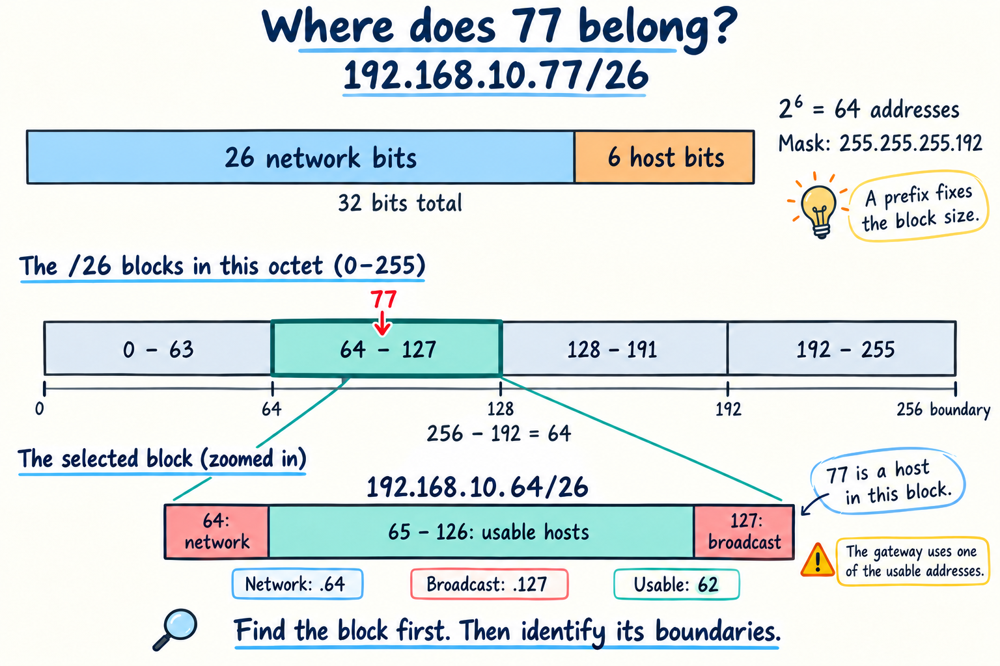
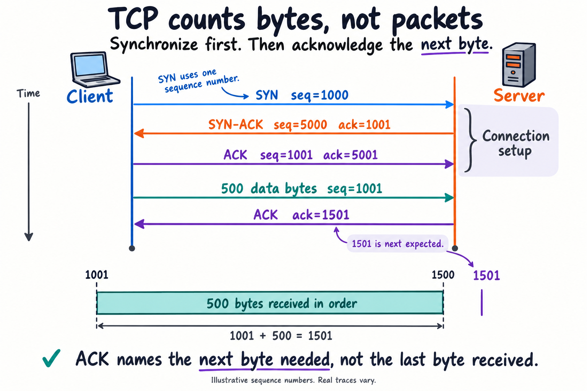
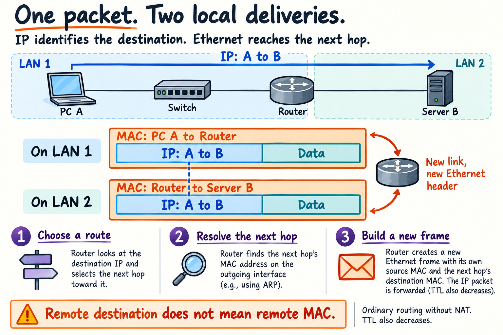

COMPUTER NETWORKS / STUDY GUIDE
Make the network
make sense.
Follow a packet. Read the bits. Explain the decisions.
A complete course companion with illustrations, captioned animations, worked calculations, device configuration, and practice answers.
Start here: what actually happens when you open a website?
Opening a website looks like one action. It is really five small problems, solved in order. Nearly everything in this course is part of solving one of them, so keep this list in your head as you read.
- Who am I?Your laptop needs an address, and it needs to know where the exit from your local network is. DHCP hands out both.
- Where is the site?You typed a name, but networks deliver to numbers. DNS turns the name into an address.
- Who do I hand this to first?If the destination is local, send straight to it. If not, send to the local exit, called the router or gateway. ARP finds the hardware address of whichever one you chose.
- How does it cross the world?Switches carry it inside a local network. Routers pass it from network to network.
- How do the two programs talk?TCP makes delivery reliable, TLS keeps it private, and HTTP asks for the page.
Four questions connect almost every topic here: Which service? Which network? Which next device? Which cable or radio?
How to use this guide
Every section carries a label, so you always know what deserves your time.
| You have | Do this |
|---|---|
| One evening before the endterm | Each chapter's "In one minute" box and quiz for Chapters 8 to 14, then Sections 8.8 and 9.6 |
| A few days | Chapter 19's endterm plan |
| Time before the final | Read only the Must know sections in order, then take each chapter quiz |
| Five minutes | The short notes, or any chapter's "In one minute" box |
Each chapter works the same way: a card tells you the time it takes and the new words, a real example comes first, then the details, then a one-minute summary and a quiz.
1. Network fundamentals
After this chapter you can: Tell what a switch, router and host each do. Calculate transfer time. Name LAN, WAN and the qualities of a good network.
New words in this chapter
- Subnet
- a group of addresses treated as one local network
- MAC address
- a device's hardware address
- Prefix
- the /24 part, which says how many bits name the network
See it work: one room, then two rooms
Imagine three laptops on one switch. Each laptop has an address in 192.168.10.0/24. When A sends to B, the destination is local. A learns B's MAC if necessary, and the switch sends the frame toward B. No router is required for this local exchange.
Now put laptop C on 192.168.20.0/24, connected through a router. A's mask shows that C is remote. A still puts C's address in the IP destination field, but it puts its gateway's MAC in the Ethernet destination field. The router forwards between the two IP networks.
This is why adding more ports on a switch does not automatically connect different IP subnets. A switch answers “which local port?” A router answers “which IP network or next hop?” A home router can contain both devices' functions in one box, so the physical box count is not the same as the logical role count.
Why can two devices have a good cable connection but still fail to communicate?
The cable only solves the physical connection. Their addresses could still be in different networks, or a rule could be blocking them. A link light proves one thing: the cable works.
A to B stays inside the left network, so no router is needed. A to C must cross the router.
1.1 What a network does Must know
A computer network connects devices so that they can exchange data and share services. A working connection needs devices, transmission media, addressing, and agreed communication rules called protocols. The Internet is a network of interconnected networks, rather than a single device or company. The Web is one service that operates over it.
A host or end device originates or receives application data. Examples include a laptop, phone, printer, and server. A client requests a service; a server provides one. These are roles: the same computer can be a client in one interaction and a server in another. In peer-to-peer (P2P) systems, peers can both request and provide resources. P2P can reduce the need for a central server but complicates management and security.
| Component | Main job | What it uses or represents |
|---|---|---|
| NIC | Connect a host to a network | Network interface with link and addressing properties |
| Repeater or hub | Repeat received signals | Physical layer; no intelligent frame forwarding |
| Layer 2 switch | Forward frames within a LAN/VLAN | Destination MAC address and MAC table |
| Router | Forward packets between IP networks | Destination IP address and routing table |
| Wireless access point (AP) | Connect wireless stations to a distribution network | Typically bridges wireless and wired links |
| Firewall | Enforce traffic policy | Addresses, ports, connection state, sometimes application context |
| Modem or optical terminal | Connect to an access technology | Cable/DSL signal conversion or fiber termination |
| Home wireless router | Combine several functions | Router, switch, AP, DHCP server, often NAT/firewall |
A physical port is a connector. An interface is a network attachment and its configuration, which may be physical or virtual. A TCP/UDP port number identifies a transport endpoint; it is a different meaning of “port.”
1.2 Network types and topology Must know
A LAN covers a limited location under local administration. A WLAN is a wireless LAN. A WAN connects networks across larger areas, often through service providers. A PAN serves personal devices, such as Bluetooth peripherals. SOHO means small office/home office. These categories describe scope and use; WAN does not automatically mean slower than LAN.
An intranet is an organization's internal network or internal services. An extranet permits controlled access for outside partners. An ISP provides Internet connectivity. Access technologies include fiber, cable broadband, DSL, cellular, satellite, and fixed wireless. A leased circuit provides contracted connectivity between locations.
A physical topology describes cable paths and equipment placement. A logical topology describes communication relationships and addressing. Common shapes are star, extended star, bus, ring, point-to-point, hub-and-spoke, and mesh. A switched Ethernet LAN is commonly a physical star. A full mesh connects every pair; for n devices it requires n(n-1)/2 point-to-point links. Redundant links improve resilience only when protocols control loops and failover.
1.3 What makes a network good Must know
- Fault tolerance: keep service operating when a component fails; use redundancy and recovery mechanisms.
- Scalability: add users, locations, or services without redesigning everything.
- Quality of Service (QoS): classify and schedule competing traffic, especially delay-sensitive voice/video. QoS cannot create additional bandwidth.
- Security: protect confidentiality, integrity, and availability.
Packet switching shares infrastructure by sending bounded units of data. Circuit switching reserves a communication circuit for a session. Packet-switched traffic can take different paths, but normal forwarding often keeps a flow on one path to reduce reordering.
Four modern trends also appear on exams:
| Term | Plain meaning |
|---|---|
| Convergence | Voice, video and data share one network |
| BYOD | People connect their own devices, under company rules |
| Cloud | Computing rented over a network. Public is shared, private is for one company, hybrid mixes both |
| IoT | Sensors and small devices connected to a network |
1.4 Performance vocabulary and a calculation Must know
| Term | Meaning |
|---|---|
| Bandwidth | Nominal capacity of a link, usually bits per second |
| Throughput | Actual rate of successfully transferred data under stated measurement conditions |
| Goodput | Useful application payload delivered per second, excluding protocol overhead/retransmissions |
| Latency | Time for data to travel; distinguish one-way delay from round-trip time |
| Jitter | Variation in delay between packets |
| Packet loss | Packets that do not reach the measurement point |
| Bottleneck | A resource limiting end-to-end performance |
| Baseline | Measurements of normal behavior for later comparison |
A 10 MB decimal file contains 80 Mb. On a 20 Mb/s link, the ideal serialization time is 80/20 = 4 seconds, before overhead, propagation, processing, queuing, and retransmissions. Eight bits make one byte. Mb/s and MB/s differ by a factor of eight. For binary storage units, 1 MiB = 1,048,576 bytes.
Explain aloud: Why can a gigabit connection still have a slow application? Consider server processing, latency, loss, congestion, wireless contention, and a slower link elsewhere.
IN ONE MINUTE
- Switch: forwards inside a network by MAC.
- Router: forwards between networks by IP.
- Time = bits divided by bit rate, and MB x 8 = Mb.
- Good networks: fault tolerant, scalable, QoS, secure.
2. Models, protocols, and encapsulation
After this chapter you can: Map OSI to TCP/IP. Name the unit at each layer. Explain what changes at a router.
New words in this chapter
- Header
- control information added in front of data
- Port
- a number identifying a program on a host
- Gateway
- the router that leads out of your network
See it work: four questions, four layers
Suppose a browser connects from 192.168.10.20:51000 to a remote server on TCP port 443. Port 443 identifies the server's transport service endpoint. The server IP identifies the destination across networks. The gateway MAC identifies the first local Ethernet receiver. Physical signaling carries the bits over a cable or radio channel.
Encapsulation lets these decisions coexist. A TCP header and application bytes go inside an IP packet; that packet goes inside a frame. At the far end, decapsulation exposes each inner layer. The receiver uses the port to hand data to the right transport/application endpoint.
A useful analogy is a document inside an envelope inside a delivery bag. The bag can be replaced at a local transfer station without changing the document's intended recipient. The limitation of the analogy is important: real headers have explicit fields and protocols, and a router also updates TTL/Hop Limit rather than copying every IP-header bit unchanged.
Watch: encapsulation and the router boundary
The colored blocks are added one layer at a time. The orange link header changes at the router; the blue endpoint addresses stay A and B in this example without NAT.
Predict first: at a router, what changes in the packet and what stays the same?
MAC addresses change, because each link gets a new frame. IP addresses stay the same unless NAT is used. TTL decreases by one.
2.1 Protocols and standards Must know
A protocol defines the rules for a communication task: message structure, encoding, size, timing, sequencing, error handling, and delivery behavior. A protocol suite is a set of cooperating protocols, such as TCP/IP. A standard allows different vendors to implement compatible behavior.
Encoding represents information as symbols or bit patterns. Signaling represents those symbols physically. Formatting sets message fields and structure. Segmentation divides data into smaller units; multiplexing lets multiple conversations share resources. Flow control prevents a sender from overwhelming a receiver. Timeouts limit how long a system waits for a response.
A unicast targets one destination; a broadcast targets all devices in a broadcast domain; a multicast targets an interested group. An anycast address is shared by multiple interfaces, with routing delivering a packet to one instance. IPv6 uses multicast instead of broadcast.
| Organization | Know it for |
|---|---|
| IEEE | LAN standards: Ethernet (802.3), Wi-Fi (802.11) |
| IETF | Internet standards, published as RFCs |
| IANA | Port numbers and protocol numbers |
| ICANN | Domain names and Internet identifiers |
| TIA/EIA | Cabling standards |
2.2 OSI and TCP/IP models Must know
| OSI layer | Job | Examples and typical unit |
|---|---|---|
| 7 Application | Network services used by applications | HTTP, DNS, SMTP; application data |
| 6 Presentation | Data representation, transformation, encryption concepts | Character encodings, compression, TLS-related functions |
| 5 Session | Establish/manage application dialogs | Session coordination concepts |
| 4 Transport | Process-to-process communication | TCP segment, UDP datagram; port numbers |
| 3 Network | Logical addressing and routing | IPv4/IPv6 packet; IP addresses |
| 2 Data Link | Delivery across the current link | Ethernet frame; MAC addresses |
| 1 Physical | Transmit signals representing bits | Copper, fiber, radio; bits |
The common four-layer TCP/IP model has Application, Transport, Internet, and Network Access. OSI 5-7 map approximately to TCP/IP Application; OSI 4 to Transport; OSI 3 to Internet; OSI 1-2 to Network Access. Some teaching models split Network Access into Physical and Link and therefore use five layers.
Models organize reasoning; real protocols do not always fit neatly into one OSI box. For example, ARP links IPv4 addressing to Ethernet delivery, and TLS sits between applications and transport in many protocol stacks.
Read downward for sending and upward for receiving. These are the four TCP/IP layers; the OSI mapping immediately above gives the more detailed seven-layer vocabulary.
2.3 Encapsulation and decapsulation Must know
Sending application data through the stack adds control information:
Application message
-> TCP header + message = segment
-> IP header + segment = packet
-> Ethernet header + packet + FCS trailer = frame
-> signals representing bits on the medium
Receiving reverses this through decapsulation. A PDU, protocol data unit, is the unit at a given layer. “Packet” is sometimes used loosely for all captured traffic; answer layer-specific questions with the precise term.
A switch forwards a frame using Layer 2 information. A router removes the incoming link framing, makes a Layer 3 forwarding decision, and creates appropriate framing for the next link. On an ordinary routed path, source and destination IP addresses remain end-to-end, while source/destination MAC addresses change at each Ethernet hop. NAT, tunnels, proxies, and similar mechanisms introduce exceptions. A router also decreases IPv4 TTL or IPv6 Hop Limit; IP headers are therefore not completely unchanged.
2.4 Three different address questions Must know
| Question | Identifier |
|---|---|
| Which application/service endpoint? | Transport protocol plus TCP/UDP port |
| Which destination interface across networks? | IP address |
| Which interface should receive this frame on the local link? | MAC address on Ethernet |
Memory test: A host opens a remote web page. The destination IP belongs to the web server. The destination Ethernet MAC belongs to the host's selected next-hop router, assuming a normal Ethernet first hop.
IN ONE MINUTE
- Data, segment, packet, frame, bits.
- Port finds the program, IP the host, MAC the next device.
- IP stays end to end, while MAC changes at each hop.
- OSI 5-7 are the TCP/IP Application layer.
3. Cisco IOS and basic device configuration
After this chapter you can: Move between IOS modes. Configure and save a switch and router. Read interface status.
New words in this chapter
- VLAN
- a switch divided into separate logical networks. Chapter 5 teaches it
- SVI
- a switch's own virtual interface, used to manage it
- SSH
- encrypted remote login
See it work: why every command has a mode
Consider interface vlan 1 followed by ip address 192.168.10.2 255.255.255.0. The first command selects an interface to edit. The second assigns the address to that selected interface. Entering the same address command in the wrong mode fails because the device has no valid interface context for it.
no shutdown turns an interface on. It cannot fix a missing cable. copy running-config startup-config persists the current configuration for later boot; it does not test whether the values are correct. After saving an incorrect gateway, the incorrect gateway will still be present after reboot.
Always prove a configuration worked: check the interface is up, then send real traffic from a PC. If a PC reaches its neighbor but not another network, the cable is fine, so look at the gateway instead.
Does the switch SVI address become the gateway for all attached PCs?
Not on an ordinary Layer 2 switch. The SVI is the switch's own management endpoint. The PCs normally use a router's local interface as their default gateway. A routing-capable multilayer switch can be configured to route, but that is an additional role.
S1>User EXECenableS1#Privilegedconf t(config)#Globalinterface or line(config-if)#One interfacecopy run startEach command only works in its own mode. Changes go live in RAM immediately and are lost on reboot until you copy them to NVRAM.
3.1 Access methods, modes, and memory Must know
A CLI accepts typed commands; a GUI offers graphical controls. A shell is the user interface to operating-system functions; a kernel manages core system resources. Console access is local/out-of-band and does not require a configured IP path. SSH provides encrypted remote management. Telnet provides remote CLI access without protecting its session contents.
| Prompt | Mode | How to enter | Typical task |
|---|---|---|---|
Switch> |
User EXEC | Initial login | Limited monitoring |
Switch# |
Privileged EXEC | enable |
Verification and saving |
Switch(config)# |
Global configuration | configure terminal |
Device-wide settings |
Switch(config-if)# |
Interface configuration | interface vlan 1 |
Interface addresses/status |
Switch(config-line)# |
Line configuration | line console 0 |
Login settings |
exit moves back one mode; end or Ctrl+Z returns from configuration to privileged EXEC; disable leaves privileged EXEC. ? shows context-sensitive help, Tab completes an unambiguous command, and command abbreviations work when unique. A caret in an error message points near the invalid part. Ctrl+Shift+6 commonly interrupts an ongoing IOS operation.
RAM holds the active running configuration and working state; it is volatile. NVRAM commonly holds startup configuration; flash holds the OS image and files; ROM holds low-level startup/diagnostic functions. Exact storage architecture varies by platform. running-config changes immediately; startup-config is what has been saved for boot.
3.2 Basic switch example Must know
This example configures a management address. It does not give every switch port an IP address. Replace the illustrative passwords before any real deployment.
enable
configure terminal
hostname S1
no ip domain-lookup
enable secret LabEnable9ChangeMe
service password-encryption
banner motd #Authorized users only.#
line console 0
password LabConsole9ChangeMe
login
logging synchronous
exit
interface vlan 1
ip address 192.168.10.2 255.255.255.0
no shutdown
exit
ip default-gateway 192.168.10.1
end
copy running-config startup-config
The SVI, switch virtual interface, supplies a management IP for that VLAN. For an SVI to be operational, the VLAN must exist and typically at least one relevant Layer 2 port must be up and forwarding. VLAN 1 is the default; real designs use a dedicated management VLAN.
ip default-gateway lets a Layer 2 switch's own management traffic reach remote networks. The switch can still forward frames between hosts without a management IP. A router or routing-enabled multilayer switch uses its routing table instead.
enable secret protects privileged access with a stored secret/hash mechanism. service password-encryption commonly obfuscates line passwords with reversible Type 7 encoding on educational IOS images; it is not strong encryption and does not encrypt Telnet traffic. no ip domain-lookup prevents mistyped commands from causing unwanted DNS lookups; it is an operational convenience, not a security requirement.
3.3 Router addressing and IPv6 forwarding Must know
enable
configure terminal
hostname R1
ipv6 unicast-routing
interface gigabitEthernet 0/0
description LAN-A
ip address 192.168.10.1 255.255.255.0
ipv6 address 2001:db8:10:1::1/64
ipv6 address fe80::1 link-local
no shutdown
exit
interface gigabitEthernet 0/1
description LAN-B
ip address 192.168.20.1 255.255.255.0
ipv6 address 2001:db8:10:2::1/64
ipv6 address fe80::1 link-local
no shutdown
end
copy running-config startup-config
Interface names may instead be g0/0/0, fa0/0, or another form. no shutdown removes administrative shutdown; it cannot fix a disconnected cable. A directly attached PC's gateway is the router address on that PC's subnet. ipv6 unicast-routing enables IPv6 routing and associated router behavior; assigning an address alone is insufficient for forwarding between IPv6 networks.
3.4 SSH management Must know
A reachable management IP, hostname/domain configuration, keys, and authentication are prerequisites in the usual educational workflow. This follows the mechanism described in Cisco's SSH configuration guide.
configure terminal
ip domain-name study.example
username netadmin secret LabSSH9ChangeMe
crypto key generate rsa modulus 2048
ip ssh version 2
line vty 0 4
login local
transport input ssh
exec-timeout 5 0
end
copy running-config startup-config
login local uses the local username database. transport input ssh restricts the configured VTY lines to SSH.
3.5 Verification commands Must know
| Command | What to inspect |
|---|---|
show running-config |
Active addresses, line settings, routing/security configuration |
show startup-config |
Saved boot configuration |
show ip interface brief |
IPv4 assignments and interface state |
show ipv6 interface brief |
IPv6 addresses and interface state |
show interfaces |
Link details, errors, duplex/speed, counters |
show ip route / show ipv6 route |
Available routes |
show arp or show ip arp |
IPv4 neighbor mappings |
show ipv6 neighbors |
IPv6 neighbor mappings |
show mac address-table |
VLAN/MAC/port learning |
show version |
Software, hardware, uptime information |
show ip ssh |
SSH status on supporting images |
up/up normally indicates working physical and data-link state. administratively down/down points to shutdown configuration. down/down often points to physical connectivity. up/down indicates a lower-layer/protocol issue requiring investigation.
Explain aloud: Why does “I configured an IP address” not prove a device can communicate? Mention mask/prefix, interface state, VLAN, neighbor discovery, routes, return path, and policy.
IN ONE MINUTE
enable, thenconf t, theninterface.- RAM is live, NVRAM survives:
copy run start. no shutdownturns an interface on.- A switch needs an IP only to be managed.
4. Physical layer, number systems, and wireless
After this chapter you can: Convert binary and hex. Pick the right cable. Explain why strong Wi-Fi can still be slow.
New words in this chapter
- Octet
- 8 bits
- Hextet
- a group of 4 hex digits in an IPv6 address
- Serialization
- the time to put all the bits onto the wire
See it work: capacity and delay are different
A link can carry many bits per second and still have noticeable delay. Sending a 1,000-byte packet onto a 10 Mb/s link takes 8,000 / 10,000,000 = 0.0008 seconds, or 0.8 ms, just to serialize its bits. That is separate from the time the signal spends propagating, waiting in queues, or being processed.
Increasing capacity reduces serialization time and may reduce queuing under load. It does not remove propagation distance. This is why a distant game server can have high ping even when a speed test reports high download throughput. In wireless networks, several clients also contend for airtime: a strong signal does not reserve the whole channel for one device.
For binary conversion, do the arithmetic instead of recognizing a memorized shape. 01001101 means 64 + 8 + 4 + 1 = 77. The zero positions contribute nothing. Those same bit positions will determine subnet boundaries in Section 8.
64 + 8 + 4 + 1 = 77. You will use exactly this table to read subnet masks in Chapter 8.
Predict first: will doubling your bandwidth halve your ping to a server far away?
No. Bandwidth shortens the time to send the bits. Most of the ping to a distant server is travel time, which stays the same.
4.1 Bits, media, and interference Must know
Layer 1 transports signals. Bits must be encoded into a signal that the medium can carry. Copper uses electrical signals, fiber uses light, and wireless uses radio-frequency energy. The same IP packet can cross different media because IP is largely media-independent.
Attenuation is weakening with distance. EMI/RFI is interference from electromagnetic/radio sources. Crosstalk is unwanted coupling between nearby conductors. Twisting paired wires helps cancel induced interference; shielding provides additional protection when properly installed. Excessive untwisting, poor termination, incorrect categories, and long runs can cause errors.
| Medium | Useful properties | Limits and terms |
|---|---|---|
| UTP | Inexpensive twisted-pair copper; common LAN access | Category rating, length, interference; commonly 8P8C/RJ-45 connector |
| STP | Shielded twisted pair | Cost, grounding, installation quality |
| Coaxial | Central conductor plus shielding | Often access/cable systems; not typical modern desktop Ethernet |
| Multimode fiber | Larger core; multiple light paths | Typically shorter building/campus links |
| Single-mode fiber | Small core; long-distance optical links | Transceiver compatibility and optical budget |
| Wireless | Mobility and flexible installation | Shared airtime, obstacles, interference, security |
Common balanced-copper Ethernet channels are limited to 100 m for many common PHY/cable combinations; this is not a universal distance for all Ethernet variants. Fiber is immune to electromagnetic interference but remains vulnerable to bending loss, connector contamination, and physical damage. Common fiber connector names are LC, SC, and ST; an SFP/SFP+ is a transceiver form factor, not a fiber connector type.
| Cable | Use it for |
|---|---|
| Straight-through | Unlike devices, such as PC to switch |
| Crossover | Like devices, such as switch to switch. Modern ports with auto-MDIX adapt by themselves |
| Rollover (console) | Your PC to a device's console port, for management |
T568A and T568B are the two standard wiring orders for the connector.
4.2 Binary and hexadecimal Endterm core
An IPv4 address has 32 bits, usually shown as four decimal octets. Each octet has eight bits. Memorize the positional weights:
128 64 32 16 8 4 2 1
1 1 0 0 0 0 0 0 = 192
1 0 1 0 1 1 0 0 = 172
To convert decimal 172, subtract 128, then 32, then 8, then 4. Set those positions to 1. To convert binary to decimal, add weights wherever the bit is 1.
A hexadecimal digit represents four bits, a nibble. Digits are 0-9 and A-F. A=10, B=11, C=12, D=13, E=14, F=15. 1010 1100 is AC, which is 172 decimal. A 48-bit Ethernet MAC uses 12 hexadecimal digits; a 128-bit IPv6 address uses 32 before compression. Leading zeros can matter for fixed-width binary calculations even when their numerical value is zero.
4.3 Wireless fundamentals Must know
A Wi-Fi network in the usual form uses access points (APs). The SSID is the network name, and the BSSID identifies one AP radio. A wireless router also routes, while a standalone AP only bridges radio to cable.
RSSI is how strong the signal is. SNR compares the signal with the background noise, so a strong signal in a noisy room can still perform badly.
| Standard or name | Bands to recognize | Main learning point |
|---|---|---|
| 802.11b/g | 2.4 GHz | Older WLAN generations |
| 802.11a | 5 GHz | Older 5 GHz WLAN |
| 802.11n / Wi-Fi 4 | 2.4 and 5 GHz | MIMO and wider-channel capabilities |
| 802.11ac / Wi-Fi 5 | 5 GHz | Higher-capacity 5 GHz generation |
| 802.11ax / Wi-Fi 6 | 2.4 and 5 GHz | Efficiency improvements including OFDMA |
| Wi-Fi 6E | 6 GHz extension of Wi-Fi 6 | Additional spectrum where permitted |
| 802.11be / Wi-Fi 7 | 2.4, 5, and 6 GHz where permitted | Further capacity/latency features; supplemental awareness |
At 2.4 GHz, channels 1, 6 and 11 avoid overlap. 2.4 GHz usually reaches further, while 5 and 6 GHz carry more data.
Wireless uses CSMA/CA, collision avoidance: listen, wait/back off, and use link acknowledgments as appropriate. Hidden nodes cannot hear each other but can interfere at a receiver; RTS/CTS can help in some cases. A basic radio channel normally shares airtime instead of acting like a dedicated full-duplex wired port.
Going further: other radio technologies and Wi-Fi 6E/7 details
Bluetooth serves short personal connections, Zigbee low-power device networks, NFC very short range, RFID tag identification, and cellular wide-area mobility. These solve different problems and are not Wi-Fi standards.
Allowed bands and channel widths vary by country. Wider channels use more spectrum and can increase contention. Frequency measures cycles per second, wavelength shrinks as frequency rises, and amplitude is signal size. See Cisco's Wi-Fi 6E overview.
Check yourself: Explain why a visible SSID does not prove Internet connectivity, good RF quality, or a trustworthy network.
IN ONE MINUTE
- Weights: 128 64 32 16 8 4 2 1.
- One hex digit is 4 bits.
- Fiber resists EMI, UTP is usually 100 m.
- Wi-Fi uses CSMA/CA and shares airtime.
5. Data link layer and Ethernet switching
After this chapter you can: Predict what a switch learns and where it sends a frame. Count collision and broadcast domains.
New words in this chapter
- Frame
- the unit of data at Layer 2
- Flood
- send out of every port except the one it came in on
- Broadcast
- a message to everyone on the local network
See it work: a switch learns from evidence
Start with an empty MAC table and three ports: A on F0/1, B on F0/2, C on F0/3. A sends an ordinary unicast frame to B. The switch can prove that A is reachable through F0/1, because A's frame just arrived there. It cannot yet prove where B is, so it floods that frame to the other eligible ports in the VLAN.
This flood does not rewrite the destination MAC into a broadcast address. Copies of the unknown-unicast frame still carry B's destination MAC. C normally rejects a frame not intended for it, while B accepts it and replies. B's reply provides new evidence: learn B→F0/2, then forward toward known A→F0/1. The next A-to-B frame can go directly to F0/2.
- A → B arrives on F0/1: learn A→F0/1; destination unknown, flood.
- B → A arrives on F0/2: learn B→F0/2; destination A known, forward F0/1.
- A → B again: destination B known, forward F0/2.
Why is unknown unicast different from broadcast?
Unknown unicast has one destination MAC that the switch has not learned. Broadcast deliberately uses the all-ones destination MAC. Both can be flooded inside the VLAN, but their destination semantics are different.
5.1 Frames, sublayers, and access Must know
Layer 2 provides framing, link-local addressing, medium access, and error detection. IEEE LAN terminology separates LLC (Logical Link Control) and MAC (Media Access Control) functions. An Ethernet II frame uses EtherType to identify the encapsulated protocol; do not assume every Ethernet frame carries a separate LLC header.
Half duplex permits sending or receiving at a time. Full duplex permits both simultaneously. Shared legacy half-duplex Ethernet uses CSMA/CD, collision detection with backoff. Normal full-duplex switched Ethernet does not use collision detection. A hub repeats into a shared collision domain; a full-duplex switch port gives a dedicated link.
A collision domain is where competing half-duplex transmissions can collide. A broadcast domain is where a Layer 2 broadcast is forwarded. A switch separates traditional collision domains per port but normally forwards broadcasts within the VLAN. Each VLAN defines a separate Layer 2 broadcast domain; routers connect IP networks and do not ordinarily forward their local broadcasts.
5.2 Ethernet II frame Must know
| Field | Size | Purpose |
|---|---|---|
| Preamble + SFD | 7 + 1 bytes on the medium | Synchronize and mark frame start; outside the usual frame-length count |
| Destination MAC | 6 bytes | Identify receiving interface/group on this link |
| Source MAC | 6 bytes | Identify transmitting interface |
| EtherType | 2 bytes | Identify payload protocol, e.g. IPv4 0x0800, ARP 0x0806, IPv6 0x86DD |
| Payload and padding | Normally 46-1500 bytes for untagged Ethernet | Encapsulated data plus any minimum-length padding |
| FCS | 4 bytes | CRC-based error detection |
A basic untagged Ethernet frame is 64-1518 bytes from destination MAC through FCS, assuming the usual 1500-byte maximum payload. An 802.1Q tag adds four bytes; jumbo frames and other formats change limits. The interframe gap is not a frame field. Captures often omit the preamble and FCS because hardware removes them.
MTU is the maximum network-layer packet size carried by a link, commonly 1500 bytes on standard Ethernet. It is different from total Ethernet frame length. FCS/CRC detects corruption; it does not encrypt or repair the frame. Ethernet commonly discards a corrupted frame; an upper-layer mechanism may recover lost data.
5.3 MAC addresses Must know
An Ethernet MAC is 48 bits, commonly shown as 00:11:22:33:44:55 or 0011.2233.4455. Historically the first 24 bits of many globally administered addresses identify an organizational assignment/OUI. Modern assignment schemes vary, and locally administered/randomized addresses do not identify a manufacturer reliably. MACs can be changed or spoofed.
- Unicast MAC: one receiving interface.
- Broadcast MAC:
ff:ff:ff:ff:ff:ff. - Multicast MAC: a group address; IPv4 multicast commonly maps into
01:00:5e:..., IPv6 multicast into33:33:....
An IP address is a logical Layer 3 identifier. A MAC is a Layer 2 identifier used on a link. Do not call the destination MAC the remote server's MAC when the server is across a router.
5.4 Switch learning, forwarding, filtering, and flooding Must know
A switch's MAC address table associates VLAN, MAC address, and port. On receiving a frame, it generally learns the source MAC on the incoming port, then looks up the destination MAC:
- Known destination on a different port: forward to that port.
- Known destination on the incoming port: filter; do not send it back out.
- Unknown unicast destination: flood eligible ports in the VLAN except the incoming port.
- Broadcast: flood eligible ports in that VLAN.
- Multicast: forwarding depends on multicast learning/snooping and configuration.
Dynamic entries age out. The MAC table is different from an ARP table: one maps MAC to switch port, the other maps IPv4 to MAC on a local link.
Worked example: A arrives on F0/1, destined for B. The table is empty. Learn A→F0/1 and flood. B replies on F0/2; learn B→F0/2 and forward to known A. Future A-to-B traffic can be sent only to F0/2.
5.5 Forwarding methods, buffers, VLANs Must know
Store-and-forward receives the complete frame and checks FCS before forwarding. Cut-through begins forwarding after reading enough header information, reducing forwarding latency but potentially passing a corrupted frame. Fragment-free is a cut-through variation that waits for the first 64 bytes. Buffering absorbs bursts or speed differences; finite buffers cause drops under sustained congestion. Ports can autonegotiate speed/duplex; mismatches can produce severe performance problems.
A VLAN logically partitions a switched network. An access port normally carries one user VLAN untagged. A trunk carries multiple VLANs using tagging, typically 802.1Q; native-VLAN handling is platform/configuration dependent. Communication between VLANs requires Layer 3 routing. VLANs support segmentation, but a VLAN by itself is not a complete firewall policy.
STP, Spanning Tree Protocol, avoids Layer 2 forwarding loops by selecting a loop-free active topology. Uncontrolled loops can cause broadcast storms and MAC instability because ordinary Ethernet frames have no IP-style hop counter. See resilience in Section 14 for how redundancy and STP work together.
IN ONE MINUTE
- Learn the source, forward on the destination.
- Unknown or broadcast: flood the VLAN.
- Frame: 64 to 1518 bytes.
- One port is one collision domain, one VLAN one broadcast domain.
6. Network layer and routing
After this chapter you can: Pick the route a router will use. Decide local or remote delivery. Write a static route.
New words in this chapter
- Next hop
- the next router on the path
- Default route
- the route used when nothing else matches
- TTL
- a counter that limits how far a packet can travel
See it work: the most specific route wins
Suppose the routing table contains a default route, 10.0.0.0/8, and 10.2.0.0/16. A packet for 10.2.3.45 matches all three, but the /16 describes the narrowest matching address range. That installed route wins. A default route exists to catch traffic lacking a more-specific match; it does not replace specific routes.
The router then resolves the chosen next hop on the outgoing link. A route saying “use R2” and an ARP entry saying “R2 has this MAC” answer two different questions. You need both a valid forwarding decision and a working local delivery method.
Now consider the reply. R2 may know a route to the server while the server's side lacks a route back to the client's subnet. The request can arrive and the conversation still fail. Test from the actual source subnet: a router ping sourced from a transit interface may use a different return route from a client's ping.
Predict first: a router has a default route and a /16 that both match. Which one is used?
The /16. More specific always wins, and the default route only catches what nothing else matches.
6.1 What IP provides Must know
The network layer supplies logical addressing and forwarding between networks. IP is connectionless: sending an IP packet does not establish a network-layer session. It is best effort: it does not promise arrival, ordering, or duplicate-free delivery. It is media-independent: an IP packet can be carried by different link technologies, subject to their MTUs. Reliability can be added by transport/application protocols.
A router's core workflow is: validate the incoming framing, decapsulate, examine the destination IP, perform a routing lookup, update the lifetime field, resolve the next hop if necessary, and send a newly framed packet. A router without a usable route drops the packet; a default route can provide a fallback.
6.2 IPv4 and IPv6 headers Must know
| IPv4 header field | Why it matters |
|---|---|
| Version | Identifies IPv4 |
| IHL | Header length; minimum IPv4 header is 20 bytes |
| DSCP/ECN | QoS marking and explicit congestion notification |
| Total Length | Header plus payload size |
| Identification, Flags, Fragment Offset | Fragmentation/reassembly information |
| TTL | Limits forwarding lifetime; routers decrement it |
| Protocol | Identifies upper-layer payload, e.g. ICMP=1, TCP=6, UDP=17 |
| Header Checksum | Checks IPv4 header integrity; recalculated when header changes |
| Source and Destination | 32-bit IP addresses |
| Options | Optional additional header information |
IPv6 has a fixed 40-byte base header, 128-bit addresses, Traffic Class, Flow Label, Payload Length, Next Header, and Hop Limit. Extension headers support additional functions. There is no IPv6 base-header checksum. In IPv4, routers can fragment when permitted; in IPv6, routers do not fragment and instead signal an oversized packet with ICMPv6 Packet Too Big. IPv6 fragmentation, when used, is done by the source. See RFC 8200 for these header and fragmentation distinctions.
Do not confuse fragmentation at the IP layer with segmentation at the transport layer. Path MTU Discovery helps a sender avoid packets too large for a path.
6.3 Local or remote delivery Must know
A simple IPv4 host compares destination and local network portions using the configured mask. More generally, hosts use their routing tables, which can contain more-specific routes.
Local address: 192.168.10.20/24
Destination A: 192.168.10.50 -> same subnet, deliver directly
Destination B: 192.168.20.50 -> remote, use a route via the gateway
The gateway's IP must normally be on a directly reachable local subnet. The host resolves the next hop's MAC, not the remote host's MAC. A host can communicate locally even when its gateway is missing; remote communication then fails unless another route provides a path.
6.4 Routes and route selection Must know
A route contains a destination prefix, forwarding information such as next hop/output interface, and source/preference information. Common IOS route codes include C connected, L local interface address, S static, and protocol-specific codes such as O for OSPF. IPv4 local host routes commonly use /32; IPv6 local addresses use /128.
Longest-prefix match comes first when forwarding: the most specific matching installed route wins. Administrative distance helps choose between competing route sources for the same prefix; a protocol's metric helps choose paths according to that protocol. Neither a low administrative distance nor a low metric overrides a more-specific installed route to another prefix.
| Destination | Next hop |
|---|---|
0.0.0.0/0 |
R-default |
10.0.0.0/8 |
R-A |
10.2.0.0/16 |
R-B |
10.2.3.0/24 |
R-C |
For 10.2.3.45, use /24 through R-C. For 10.2.8.1, use /16 through R-B. A default route matches anything but loses to every more-specific matching route.
A static route is configured manually. A dynamic routing protocol exchanges reachability and adapts to changes. RIP uses hop count and treats 16 hops as unreachable; OSPF is link-state and uses cost; EIGRP uses a composite metric; BGP exchanges interdomain reachability and policy. Know their roles; full configuration is beyond this introductory guide's core scope.
Both addresses match several boxes. Each uses the smallest box it fits inside. An address starting 192 fits only the outer box, so the default route handles it.
Static-routing example for two routers connected through 10.0.0.0/30:
R1(config)# ip route 192.168.20.0 255.255.255.0 10.0.0.2
R2(config)# ip route 192.168.10.0 255.255.255.0 10.0.0.1
Both forward and return paths must exist. A successful outgoing request does not prove the reply can return. The IPv6 default prefix is ::/0; the IPv4 default prefix is 0.0.0.0/0. A next hop must itself be resolvable/reachable. When an IPv6 next hop is link-local, the route also needs an outgoing interface to identify its link.
Explain aloud: Routing decides where a packet should go; ARP/ND makes the selected directly connected next hop reachable at Layer 2.
IN ONE MINUTE
- Longest prefix wins, always first.
- AD compares only identical prefixes.
- Routers lower TTL by one.
- Routes must exist in both directions.
7. ARP and IPv6 Neighbor Discovery
After this chapter you can: Explain whose MAC a host asks for. Name the ND messages. Keep the four tables apart.
New words in this chapter
- Cache
- answers stored for reuse
- Multicast
- a message to one interested group
- ICMPv6
- IPv6's control message protocol
See it work: resolve the gateway, not the remote server
A is 192.168.10.20/24, its gateway is 192.168.10.1, and the final destination is 192.168.20.30. A compares prefixes and sees that the final destination is remote. Its unanswered local question is therefore “Who has 192.168.10.1?”, not “Who has 192.168.20.30?”
A's ARP request is a local Ethernet broadcast. The router's LAN interface supplies its MAC. A can now send a frame whose Ethernet destination is the router, with an enclosed IP packet whose destination is still 192.168.20.30. The switch forwards the frame; the router reads the packet and selects the next link.
For IPv6, a Neighbor Solicitation resolves the chosen local neighbor using ICMPv6 and multicast. Router Advertisements solve a different problem: discovering routers and configuration information. An NS is not an RA, even though both are part of Neighbor Discovery.
Predict first: you ping a server in another country. Whose MAC does your PC ask for?
Your default gateway's. Your PC can only deliver a frame to something on its own network.
7.1 IPv4 ARP, step by step Must know
Address Resolution Protocol (ARP) discovers the Ethernet MAC associated with an IPv4 address on the local link. It is carried directly in Ethernet, not inside an IPv4 packet, and it has no TCP/UDP port.
Suppose A is 192.168.10.20/24 and needs to reach local B at 192.168.10.30:
- A checks its ARP cache for B's IPv4-to-MAC mapping.
- If absent, A sends an ARP request to Ethernet broadcast
ff:ff:ff:ff:ff:ff: “Who has 192.168.10.30?” - The switch floods the request inside the VLAN.
- B normally responds with a unicast ARP reply containing B's MAC.
- A stores the mapping and sends the queued IP packet in an Ethernet frame addressed to B.
For a remote destination, A performs the same process for its selected gateway IP, while keeping the remote destination in the IP header. ARP broadcasts are not normally routed. Dynamic cache entries expire; static entries are configured. Gratuitous ARP can announce an address mapping and help update peers or detect conflicts. ARP spoofing/poisoning injects false mappings; ARP has no built-in authentication.
The first ping can time out while ARP finishes. Later pings then succeed, because the answer is now cached.
- 1. A asks the LANEthernet broadcast: who has gateway IPv4 192.168.10.1?
- 2. The gateway answers AARP reply supplies the gateway interface MAC.
- 3. A sends its frameEthernet destination: gateway MAC. Enclosed IP destination: remote 192.168.20.30.
ARP is not DNS and is not a routing protocol. The route selected the gateway first; ARP supplies the local link-layer mapping.
7.2 IPv6 Neighbor Discovery Must know
IPv6 uses Neighbor Discovery (ND/NDP) through ICMPv6, rather than ARP. It supports address resolution, router discovery, prefix information, reachability checking, and redirects. The five core messages are described in RFC 4861:
| Message | Type | Purpose |
|---|---|---|
| Router Solicitation (RS) | 133 | Ask local routers to advertise |
| Router Advertisement (RA) | 134 | Advertise router/prefix/configuration information |
| Neighbor Solicitation (NS) | 135 | Resolve/check a neighbor; used during DAD |
| Neighbor Advertisement (NA) | 136 | Supply neighbor information or respond to NS |
| Redirect | 137 | Inform a host of a better first hop on the link |
Duplicate Address Detection (DAD) checks whether an address is already in use before normal assignment. Neighbor Unreachability Detection (NUD) checks continuing reachability. Multicast makes address resolution more targeted than broadcasting every request to all hosts. ND is essential functionality, so blocking all ICMPv6 can break ordinary IPv6 operation.
For an IPv6 unicast address, a solicited-node multicast address has the prefix ff02::1:ff00:0/104 and uses the final 24 bits of that unicast address. For example, a target ending in ...:1234:5678 maps to ff02::1:ff34:5678. Its Ethernet multicast destination is 33:33:ff:34:56:78. Several targets can share a solicited-node group, so the full target address in the solicitation still matters.
7.3 Keep the tables separate Must know
| Table | Example mapping | Typical place |
|---|---|---|
| Switch MAC table | VLAN 10 + MAC → F0/2 | Switch |
| ARP cache | IPv4 → MAC | IPv4 Ethernet host/router |
| IPv6 neighbor cache | IPv6 → link-layer address/state | IPv6 host/router |
| Routing table | Destination prefix → next hop/interface | Host/router |
| DNS cache | Name and record type → cached records | Resolver/client |
Check yourself: Which table must you inspect if a switch sends a known unicast out the wrong port? Which table if a host associates the gateway IP with the wrong MAC?
IN ONE MINUTE
- Remote destination: ARP for the gateway.
- ARP request is broadcast, reply is unicast.
- IPv6 uses ND over ICMPv6: RS, RA, NS, NA.
- MAC table, ARP cache, routing table and DNS cache are different.
8. IPv4 addressing and subnetting
After this chapter you can: Solve all ten IPv4 task types in the common task list. Build a VLSM plan with a topology.
New words in this chapter
- Mask
- the dotted form of the prefix, like 255.255.255.0
- Block size
- the distance from one subnet to the next
- Borrowing
- turning host bits into subnet bits
See it work: why a /26 creates blocks of 64
The first 26 bits are fixed network bits, so only six host bits can change. Six binary positions produce 2^6 = 64 different combinations. In a conventional IPv4 LAN block, the all-zero combination identifies the network, and the all-one combination identifies its broadcast. This leaves 62 usable assignments.
For 192.168.10.77/26, the last octet is 01001101. The mask's last octet is 11000000. Keep the first two bits and replace the final six with zeros: 01000000 = 64. To find broadcast, set those six to ones: 01111111 = 127. The host lies between those boundaries, so the usable range is .65-.126.

The figure is a map, not a shortcut that applies only to /24 parents. If the changing prefix boundary is in the third octet, do the same reasoning there. For example /20 uses mask 255.255.240.0, so the third octet advances by 16.
Watch: the bit boundary becomes an address range
The animation derives the network with binary AND, then connects it to the four equal last-octet blocks. Pause before the answer and predict the network.
Predict first: how many hosts fit in a /26?
62. Six host bits give 64 addresses, minus the network and broadcast.
8.1 Address structure and special ranges Must know
An IPv4 address has 32 bits. The prefix length says how many leading bits identify the network. The subnet mask represents those bits as 1s followed by host bits as 0s. /24 is 255.255.255.0; /26 is 255.255.255.192. Valid conventional masks have contiguous 1s. The IP alone does not tell you its subnet; the prefix is necessary.
| Range | Meaning |
|---|---|
10.0.0.0/8 |
Private address space |
172.16.0.0/12 |
Private: 172.16.0.0 through 172.31.255.255 |
192.168.0.0/16 |
Private address space |
127.0.0.0/8 |
Loopback; commonly test 127.0.0.1 |
169.254.0.0/16 |
IPv4 link-local; often seen when automatic configuration has no DHCP lease |
224.0.0.0/4 |
IPv4 multicast |
255.255.255.255 |
Limited broadcast |
0.0.0.0 |
Unspecified address in relevant contexts; /0 denotes the default prefix |
192.0.2.0/24, 198.51.100.0/24, 203.0.113.0/24 |
Documentation examples |
100.64.0.0/10 |
Shared address space often used in carrier-grade NAT |
Not every address outside the three private ranges is a usable public Internet address. Several ranges are reserved or special-purpose. A historical Class A/B/C default mask was /8, /16, or /24; CIDR uses explicit prefix lengths and supersedes classful routing. Do not derive a modern subnet from its old address class unless a question explicitly asks for historical classful behavior.
Network address: host bits all 0. Directed broadcast: host bits all 1 for an ordinary subnet. Unicast host addresses: usable interface assignments between them. Routers commonly block forwarding directed broadcasts to prevent abuse. A multicast destination is not an ordinary unicast host address.
8.2 The subnet calculation method Endterm core
THE METHOD FOR ALMOST EVERY IPV4 TASK
- Interesting octet. Split the prefix into 8s. /20 = 8 + 8 + 4, so the 3rd octet.
- Block size. 256 minus the mask value in that octet.
- Network. The largest multiple of the block not above the address's value. Octets to the right become 0.
- Broadcast. Next network minus 1. Octets to the right become 255.
- Range. Network + 1 to broadcast - 1.
For a conventional IPv4 subnet with prefix p:
- Host bits h = 32 - p.
- Total addresses = 2^h.
- Conventional usable addresses = 2^h - 2.
- Network = IP address bitwise AND subnet mask.
- Broadcast = network with every host bit set to 1.
- First host = network + 1; last host = broadcast - 1.
Use minus two for every endterm subnet, including a /30. Two special cases exist outside the endterm: a /31 can use both addresses on a point-to-point link, and a /32 is a single host route.
| Prefix | Mask | Block addresses | Conventional usable hosts |
|---|---|---|---|
| /16 | 255.255.0.0 | 65,536 | 65,534 |
| /20 | 255.255.240.0 | 4,096 | 4,094 |
| /21 | 255.255.248.0 | 2,048 | 2,046 |
| /22 | 255.255.252.0 | 1,024 | 1,022 |
| /23 | 255.255.254.0 | 512 | 510 |
| /24 | 255.255.255.0 | 256 | 254 |
| /25 | 255.255.255.128 | 128 | 126 |
| /26 | 255.255.255.192 | 64 | 62 |
| /27 | 255.255.255.224 | 32 | 30 |
| /28 | 255.255.255.240 | 16 | 14 |
| /29 | 255.255.255.248 | 8 | 6 |
| /30 | 255.255.255.252 | 4 | 2 |
8.3 Worked example: /26 Endterm core
Find the network, broadcast, and host range of 192.168.10.77/26.
/26means mask255.255.255.192; six host bits remain.- The last-octet block size is 256 - 192 = 64.
- Last-octet blocks start at 0, 64, 128, and 192.
- 77 lies in 64-127.
- Network: 192.168.10.64.
- Broadcast: 192.168.10.127.
- Usable hosts: 192.168.10.65-126, 62 addresses.
Binary confirmation: 77=01001101; 192=11000000; AND=01000000=64. A gateway such as .65 consumes one usable address; it is not an extra address beyond the host count.
8.4 Crossing an octet boundary Endterm core
For 172.16.37.99/20, the mask is 255.255.240.0. The changing octet is the third, with block size 16. Third-octet blocks include 0-15, 16-31, 32-47. Therefore:
- Network: 172.16.32.0/20.
- Broadcast: 172.16.47.255.
- Usable: 172.16.32.1-172.16.47.254.
- Hosts: 2^12 - 2 = 4094.
For 10.23.8.9/13, the mask is 255.248.0.0; the second octet increments by 8. The network is 10.16.0.0/13, and the broadcast is 10.23.255.255. Always identify which octet contains the prefix boundary.
8.5 Fixed-length subnetting Endterm core
FLSM gives every subnet the same mask. To split 192.168.1.0/24 into at least four equal subnets, borrow two host bits: 2^2=4, so the new prefix is /26.
| Network | Host range | Broadcast |
|---|---|---|
| 192.168.1.0/26 | .1-.62 | .63 |
| 192.168.1.64/26 | .65-.126 | .127 |
| 192.168.1.128/26 | .129-.190 | .191 |
| 192.168.1.192/26 | .193-.254 | .255 |
If a requirement needs 50 interface addresses, choose the smallest h with 2^h - 2 ≥ 50: h=6, prefix /26. If it needs 64 usable addresses, /26 fails because it gives 62; choose /25.
When borrowing b bits from a parent prefix, the modern number of equal child subnets is 2^b; do not subtract two from the subnet count. Check that the remaining host capacity meets requirements.
8.6 VLSM, worked completely Endterm core
Variable Length Subnet Masking allocates different subnet sizes from a parent block. It reduces waste and allows growth planning. Example parent: 192.168.50.0/24. Needs: 60, 28, 12, and 2 usable addresses, including any required gateway/interface assignments.
- Sort requirements largest first.
- Choose the smallest valid block for each.
- Allocate on a boundary aligned to that block size.
- Verify no overlap and that every subnet lies inside the parent.
| Need | Network | Mask | Usable range | Broadcast |
|---|---|---|---|---|
| 60 | 192.168.50.0/26 | 255.255.255.192 | .1-.62 | .63 |
| 28 | 192.168.50.64/27 | 255.255.255.224 | .65-.94 | .95 |
| 12 | 192.168.50.96/28 | 255.255.255.240 | .97-.110 | .111 |
| 2 | 192.168.50.112/30 | 255.255.255.252 | .113-.114 | .115 |
Addresses .116-.255 remain unallocated, but that remainder is not one arbitrary aligned subnet. Future allocations must still use valid boundaries. Reserving a full aligned growth block can be easier to manage than packing every allocation tightly.
8.7 Structured design and summarization Good to know
Document the site, department, VLAN, prefix, gateway, static/reserved addresses, DHCP range, and growth allowance. Avoid overlap. Count router interfaces, switch management, servers, printers, and other infrastructure where relevant.
Route summarization combines aligned contiguous networks into a shorter prefix. 192.168.0.0/24 and 192.168.1.0/24 combine as 192.168.0.0/23. However, 192.168.1.0/24 and 192.168.2.0/24 cannot form one exact /23, because they are not aligned to the same /23 block. A broad summary can include unused or unreachable space, so its forwarding implications need consideration.
Common mistakes: subtracting two from subnet count; treating every .0 as a network address; assuming /24; forgetting the router needs an address; using a broadcast as a host; overlapping VLSM blocks; choosing a mask with too few usable addresses. An address ending in .0 can be a valid host under some shorter prefixes.
8.8 Endterm walkthroughs Endterm core
These are ten common IPv4 task types. Read the question, find its type here, and follow the same steps every time. Task 11, IPv6, is in Section 9.6. You can practice each one with fresh numbers in the trainer.
| The question says | Task type | Key move |
|---|---|---|
| "range of assignable addresses" | 1 | Network + 1 to broadcast - 1 |
| "network address of" | 2 | Largest multiple of the block |
| "directed broadcast" | 3 | Next network - 1 |
| "how many subnets" from two prefixes | 4 | 2^(new prefix - old prefix) |
| "at least N hosts... which mask" | 5 | Fewest h with 2^h - 2 ≥ N |
| "divide into N equal, list them" | 6 | Borrow bits, add the block |
| "N equal subnets: mask and hosts" | 7 | Add borrowed bits to the prefix |
| "four subnets: range and broadcast" | 8 | First subnet fully, then add the block |
| A table of areas and host counts | 9 | VLSM, largest first |
| Two routers and departments | 10 | VLSM plus a /30 link, then draw |
Tasks 1 to 3: one address
Example: 10.91.203.77 /19. /19 = 8 + 8 + 3, so the 3rd octet holds the split. The mask is 255.255.224.0, and the block is 256 - 224 = 32. The 3rd octet is 203, and multiples of 32 give 192 and 224, so 203 lies in 192 to 223.
- Network: 10.91.192.0
- Next network: 10.91.224.0, so broadcast: 10.91.223.255
- Assignable range: 10.91.192.1 to 10.91.223.254
Common slip: the 4th octet, 77, plays no part here. The split is in the 3rd octet.
Task 4: how many subnets fit
Example: 172.17.128.0 /18, each site gets a /26. Borrowed bits = 26 - 18 = 8, so there are 2^8 = 256 subnets. Check: 2^14 addresses divided by 2^6 per subnet is 256. Drill it.
Task 5: choose the mask from a host count
Example: 192.168.8.0 /21, each floor needs at least 120 hosts.
- Find the fewest host bits: h = 6 gives 62, too few. h = 7 gives 126, enough.
- Prefix = 32 - 7 = /25, so the mask is 255.255.255.128.
- Borrowed = 25 - 21 = 4, so 16 subnets.
The smallest h that fits leaves the most bits for subnets, which is why the question says "most subnets". Drill it.
Tasks 6 and 8: equal subnets, listed
Example: 10.40.32.0 /20 into four subnets. 4 = 2^2, so borrow 2 bits: /22, mask 255.255.252.0, block 4 in the 3rd octet.
| Network | Usable range | Broadcast |
|---|---|---|
| 10.40.32.0/22 | 10.40.32.1 to 10.40.35.254 | 10.40.35.255 |
| 10.40.36.0/22 | 10.40.36.1 to 10.40.39.254 | 10.40.39.255 |
| 10.40.40.0/22 | 10.40.40.1 to 10.40.43.254 | 10.40.43.255 |
| 10.40.44.0/22 | 10.40.44.1 to 10.40.47.254 | 10.40.47.255 |
Check: the last broadcast must be the last address of the /20. 32 + 16 - 1 = 47, so 10.40.47.255 is right. Drill task 6, task 8.
Task 7: mask and hosts for N subnets
Example: 192.168.16.0 /22 into 8 subnets. 8 = 2^3, so /22 + 3 = /25. Mask 255.255.255.128, host bits 7, so 2^7 - 2 = 126 hosts each. When the question asks for "the mask", write the dotted form. Drill it.
Task 9: VLSM across an octet
This is harder than a /24 example because one subnet is bigger than a whole octet.
Example: 172.18.44.0 /22. Classrooms 300 hosts, Library 120, Admin 45, CCTV 18.
| Area | Hosts | 2^h - 2 | Prefix |
|---|---|---|---|
| Classrooms | 300 | 2^9 - 2 = 510 | /23 |
| Library | 120 | 2^7 - 2 = 126 | /25 |
| Admin | 45 | 2^6 - 2 = 62 | /26 |
| CCTV | 18 | 2^5 - 2 = 30 | /27 |
300 hosts will not fit in a /24, which holds 254, so Classrooms needs a /23. A /23 covers two values of the 3rd octet, here 44 and 45. Everything else fits into 46.
| Area | Network | Usable range | Broadcast |
|---|---|---|---|
| Classrooms | 172.18.44.0/23 | 172.18.44.1 to 172.18.45.254 | 172.18.45.255 |
| Library | 172.18.46.0/25 | 172.18.46.1 to 172.18.46.126 | 172.18.46.127 |
| Admin | 172.18.46.128/26 | 172.18.46.129 to 172.18.46.190 | 172.18.46.191 |
| CCTV | 172.18.46.192/27 | 172.18.46.193 to 172.18.46.222 | 172.18.46.223 |
Why largest first: big blocks need the strictest boundaries. Placing them first means the small ones always land on a valid start. Drill it.
Task 10: VLSM with two routers
Example: 192.168.20.0 /23. R1 has Teaching 180 hosts and Office 90. R2 has Storage 26 and Sensors 9.
Count the networks first. Four departments plus the link between the routers makes five networks. The link needs 2 addresses, so it is a /30.
| Segment | Hosts | Prefix | Network | Ends at |
|---|---|---|---|---|
| Teaching (R1) | 180 | /24 | 192.168.20.0/24 | 192.168.20.255 |
| Office (R1) | 90 | /25 | 192.168.21.0/25 | 192.168.21.127 |
| Storage (R2) | 26 | /27 | 192.168.21.128/27 | 192.168.21.159 |
| Sensors (R2) | 9 | /28 | 192.168.21.160/28 | 192.168.21.175 |
| R1-R2 link | 2 | /30 | 192.168.21.176/30 | 192.168.21.179 |
192.168.20.0/24192.168.21.0/25192.168.21.176/30192.168.21.128/27192.168.21.160/28Each department connects to its router through its own switch. Usable link addresses are .177 for R1 and .178 for R2.
Before you hand it in: every subnet fits its hosts, none overlap, all sit inside the /23, the link is included, and the topology is drawn and labelled. Drill it.
If a question counts the gateway: most tasks size each subnet from the host number given. If a question says the router also needs an address in that LAN, add one before sizing: 30 hosts plus a gateway is 31, which needs a /26.
IN ONE MINUTE
- Interesting octet, block, network, broadcast, range.
- Hosts: 2^h - 2. Subnets: 2^borrowed.
- VLSM: largest first, link is a /30.
- Check the last broadcast against the parent block.
9. IPv6 addressing and configuration
After this chapter you can: Compress and expand addresses. Name address types. Subnet a /48 or /56 and configure it.
New words in this chapter
- GUA
- a global, Internet-routable address
- LLA
- a link-local address, valid on one link only
- RA
- a router's message saying how to get an address
See it work: expand before you compress
Take 2001:db8:5::a:10. Five groups are explicitly written: 2001, db8, 5, a, 10. IPv6 needs eight groups, so :: replaces three zero groups. The full address is 2001:0db8:0005:0000:0000:0000:000a:0010. Counting groups removes the ambiguity that often causes exam mistakes.
Now imagine one router advertising 2001:db8:5:1::/64 on a LAN. A host can construct an address using the advertised prefix and an interface identifier, then perform Duplicate Address Detection. The host still needs default-router information for other networks. Router Advertisements provide that information; receiving a DHCPv6 address does not by itself supply a default-router option.
An interface's link-local address stays on its link. That is why the same router can use fe80::1 on two different LANs without creating a cross-link duplicate: the link supplies the scope. Using the same address twice on one LAN would be a different situation.
Predict first: what number comes after 9 when you count IPv6 subnets?
a. IPv6 is written in hex, so the sequence runs 9, a, b, c, d, e, f, 10.
9.1 Representation and compression Must know
IPv6 addresses contain 128 bits, written as eight 16-bit hexadecimal groups called hextets. Example:
2001:0db8:0000:0000:0001:0000:0000:002a
2001:db8::1:0:0:2a
Remove leading zeros within each group. A single :: can replace one contiguous run of all-zero groups. It can appear only once, otherwise expansion is ambiguous. For a canonical short form, compress the longest run, taking the leftmost if tied; the recommended canonical form does not compress a single zero group with ::. Trailing zeros within a nonzero hextet cannot simply be removed: 1200 is not 12.
Spot the invalid ones. 2001:db8::1::5 uses :: twice. 2001:db8:acad:12345::1 has a five-digit group. 2001:db8:0g::1 contains a non-hex letter.
/64 means 64 prefix bits, commonly a LAN subnet boundary. IPv6 interfaces often have several addresses at once: link-local, global, temporary/privacy, and others. The subnet prefix and interface identifier are not a decimal IPv4-style network/host split.
9.2 Address types and scopes Must know
| Address/prefix | Meaning |
|---|---|
2000::/3 |
Currently used global unicast allocation space |
2001:db8::/32 |
Documentation prefix; not real Internet service addressing |
fe80::/10 |
Link-local address space; operational LLAs are normally formed with a /64 link prefix |
fc00::/7 |
Unique-local space; locally generated ULAs use fd00::/8 |
ff00::/8 |
Multicast |
ff02::1 |
All-nodes multicast on the link |
ff02::2 |
All-routers multicast on the link |
::1 |
Loopback |
:: |
Unspecified address |
A GUA is a global unicast address. An LLA is link-local and is not forwarded across routers. A ULA serves local/private-style addressing; it is not intended for normal global Internet routing. IPv6 anycast uses unicast-format addressing assigned in multiple places; routing selects one instance. IPv6 has no broadcast address. Multicast scope determines how far the group applies; ff02 is link-local scope.
The same link-local address, such as fe80::1, can be reused on a router's separate links because its scope is local to each link. When an address could refer to multiple interfaces, a zone/interface identifier resolves the ambiguity, such as fe80::1%eth0 in some host tools. Duplicate link-local addresses on the same link are a problem.
The first two regions together form this LAN's /64 prefix. Changing subnet ID 0012 to 0013 creates another /64 within the same /48. This is one allocation example, not a fixed rule that every organization receives a /48.
9.3 Static addressing, SLAAC, and DHCPv6 Must know
A host can receive addressing information statically, through SLAAC (Stateless Address Autoconfiguration), and/or through DHCPv6. RAs advertise on-link prefixes, router lifetime, and relevant flags/options. A normal /64 LAN is important for standard SLAAC behavior.
- SLAAC: the host constructs an address from an advertised autonomous prefix and an interface identifier.
- Stateless DHCPv6: address construction can remain SLAAC while DHCPv6 supplies other configuration.
- Stateful DHCPv6: a DHCPv6 server leases addresses and supplies other configuration.
The Router Advertisement (RA) suggests which of three methods a host should use:
| RA method | Address comes from | DNS comes from | Default gateway |
|---|---|---|---|
| 1. SLAAC | Host builds it from the RA prefix | RA | Router's link-local address |
| 2. SLAAC + stateless DHCPv6 | Host builds it from the RA prefix | DHCPv6 server | Router's link-local address |
| 3. Stateful DHCPv6 | DHCPv6 server | DHCPv6 server | Router's link-local address |
The gateway column never changes, which is worth remembering: the default gateway always comes from the RA, as the RA's source address. A host can ask for an RA by sending a Router Solicitation (RS).
Hosts normally learn the IPv6 default router from RA, not from DHCPv6. DNS server information can be supplied through appropriate RA options or DHCPv6 depending on support and configuration. The RA A/M/O flags guide behavior, but host operating systems differ in supported mechanisms.
Interface identifiers may be generated randomly, with stable privacy mechanisms, manually, or with modified EUI-64. Traditional EUI-64 inserts ff:fe into a 48-bit MAC and flips its universal/local bit. Example MAC 00:11:22:33:44:55 produces IID 0211:22ff:fe33:4455. Do not assume every modern IPv6 address exposes a MAC. DAD checks uniqueness before normal use.
9.4 IPv6 subnetting Endterm core
A /48 allocation contains 2^(64-48)=65,536 /64 subnets. A /56 contains 256 /64 subnets. For 2001:db8:abcd::/48, the fourth hextet can identify /64 subnets:
2001:db8:abcd:0000::/64
2001:db8:abcd:0001::/64
...
2001:db8:abcd:00ff::/64
Increment in hexadecimal: after 0009 comes 000a, after 000f comes 0010. For a /56, part of the fourth hextet is fixed; e.g. 2001:db8:abcd:1200::/56 provides /64 subnet IDs from 1200 through 12ff.
Do not apply IPv4 broadcast subtraction to IPv6. IPv6 has no broadcast, but reserved address roles and operational conventions still matter; a numerically possible interface ID is not automatically a recommended host assignment.
Check yourself: Why can a host have a GUA and still fail to reach another subnet? Check its default router, router forwarding, neighbor discovery, routing, return path, and filtering.
9.5 EUI-64 by hand Must know
Under SLAAC, a host invents the last 64 bits of its address, either randomly or with EUI-64. In three steps:
- Split the MAC in half:
00:1a:2band3c:4d:5e. - Insert
ff:fein the middle:00:1a:2b:ff:fe:3c:4d:5e. - Flip the 7th bit of the first byte:
00= 0000 0000 becomes 0000 0010 =02.
The interface ID is 021a:2bff:fe3c:4d5e. With prefix 2001:db8:acad:10::/64, the global address is 2001:db8:acad:10:21a:2bff:fe3c:4d5e and the link-local address is fe80::21a:2bff:fe3c:4d5e.
Going backwards: for fe80::5a1f:aaff:fe12:3456, remove ff:fe and flip the bit back. 5a = 0101 1010 becomes 0101 1000 = 58, so the MAC is 58:1f:aa:12:34:56.
Random or EUI-64? If the interface ID has no ff:fe in the middle, it is random, as in fe80::50a5:8a35:a5bb:66e1. Drill EUI-64.
9.6 Endterm walkthrough: IPv6 subnetting Endterm core
Task 11 has three parts: count the subnets, list them in hex, and configure an interface.
2001:db8:77:xxxx::/6416 bits, 65,536 subnets2001:db8:c0:77xx::/648 bits, 256 subnets2001:db8:c0:77ax::/644 bits, 16 subnetsEach hex digit is 4 bits. Only the highlighted digits change, and everything to their left stays fixed.
Example A: given 2001:db8:77::/48, every LAN is a /64.
- Count: 64 - 48 = 16 bits, so 2^16 = 65,536 subnets. There is no minus 2, because IPv6 has no broadcast.
- List in hex: LAN 9 is
2001:db8:77:9::/64, LAN 10 is2001:db8:77:a::/64, LAN 15 is2001:db8:77:f::/64, LAN 16 is2001:db8:77:10::/64.
Example B: given 2001:db8:c0:7700::/56.
- Count: 64 - 56 = 8 bits, so 256 subnets.
- First three:
2001:db8:c0:7700::/64,2001:db8:c0:7701::/64,2001:db8:c0:7702::/64. - Last:
2001:db8:c0:77ff::/64. All 8 bits on isff.
Configure R1 G0/0/0 as ::1 in the first subnet:
R1(config)# ipv6 unicast-routing
R1(config)# interface g0/0/0
R1(config-if)# ipv6 address 2001:db8:c0:7700::1/64
R1(config-if)# no shutdown
Without ipv6 unicast-routing, the router does not forward IPv6 or send RAs, so SLAAC on that LAN fails. Verify with show ipv6 interface brief and show ipv6 route, which shows C connected and L local /128 entries. Drill it.
9.7 Moving from IPv4 to IPv6 Must know
| Method | What it does |
|---|---|
| Dual stack | Devices run IPv4 and IPv6 side by side |
| Tunneling | An IPv6 packet travels inside an IPv4 packet |
| Translation (NAT64) | Converts between IPv6 and IPv4 packets |
IN ONE MINUTE
- 8 hextets,
::once only. - 2000::/3 global, fe80::/10 link-local, ff00::/8 multicast.
- Gateway always comes from the RA.
- Subnets: 2^(64 - prefix), counted in hex.
10. ICMP and connectivity testing
After this chapter you can: Test connectivity in the right order. Read traceroute without overstating what it proves.
New words in this chapter
- ICMP
- the control messages that travel inside IP
- Echo
- the request and reply used by ping
See it work: why traceroute reveals routers
A probe sent with TTL=1 reaches the first router and expires there. That router may return ICMP Time Exceeded. A probe with TTL=2 can pass the first router and expire at the second. Repeating with larger values reveals routers that choose to respond.
The responses are separate packets and must themselves find a route back. If a router filters or rate-limits its diagnostic replies, a timeout can appear while forwarding continues normally. Therefore a row of asterisks is missing diagnostic evidence, not an automatic proof that the forwarding path is broken at that row.
Ping asks a different, narrower question: can this Echo exchange complete? If ping by IP succeeds but an HTTPS login fails, focus on name resolution, server port/policy, TLS, credentials, and application behavior. Repeating ping does not test those missing parts.
ICMPv4/ICMPv6 carry control, error, and diagnostic messages. They are network-layer companions carried in IP; they do not use TCP or UDP ports. ICMP does not make IP reliable.
| Message | Meaning |
|---|---|
| Echo Request / Echo Reply | Used by ping to test an IP exchange |
| Destination Unreachable | A destination, route, service, or policy condition prevented delivery |
| Time Exceeded | TTL/Hop Limit expired, or certain reassembly conditions |
| ICMPv6 Packet Too Big | Packet exceeds a forwarding link's MTU |
Predict first: ping by IP works but a website fails. Is the network broken?
Not at the IP level. Ping only proves that one exchange worked, so look at DNS, the port, TLS or the application.
10.1 Ping and its limits Must know
A successful ping proves that a particular exchange worked at that moment. It does not prove DNS, HTTP, authentication, or every application works. A failed ping can indicate loss, missing routes, filtering, or a host configured not to answer. It does not prove that the target is powered off. Round-trip time includes the request and reply paths; those paths may differ.
Use a sequence:
- Inspect local addressing/interface state.
- Ping loopback to check a local-stack function.
- Ping the local gateway.
- Ping a known remote IP.
- Test a hostname to add name resolution.
- Test the actual application and port.
Loopback success does not test the NIC or cable. A host pinging its own assigned IP also does not necessarily test the external link. Test traffic to another device.
10.2 Traceroute Must know
Each router lowers TTL by one. Where it reaches zero, that router sends back Time Exceeded and so reveals itself.
Traceroute sends probes with increasing TTL/Hop Limit values. Intermediate routers return Time Exceeded when a probe expires. The final response depends on the probe type. Windows tracert commonly uses ICMP Echo; classic Unix/Cisco traceroute commonly uses UDP, and other variants can use TCP. An asterisk means a response was not received before timeout; it does not by itself prove forwarding stops there.
Extended ping can choose source/interface and other parameters, helping isolate return-path and source-subnet problems. A router ping sourced from its transit link can work while a host behind it still fails due to a missing route back to the host's LAN.
Common trap: Blocking every ICMP message can break diagnostics and Path MTU Discovery; IPv6 also depends on ICMPv6 for essential neighbor functions.
IN ONE MINUTE
- Ping: ICMP Echo. No ports.
- Traceroute: rising TTL, Time Exceeded.
* * *means a silent router, not a broken path.- Test loopback, gateway, remote, name, application.
11. Transport layer: TCP and UDP
After this chapter you can: Calculate ACK numbers. Walk through opening and closing a connection. Read netstat. Choose TCP or UDP.
New words in this chapter
- Segment
- the unit of data at the transport layer
- Socket
- an IP address plus a port
- Flag
- one bit in the header that marks a purpose
See it work: ACK 1501 is a statement about bytes
After a client SYN with sequence 1000, its first data byte normally starts at 1001 because SYN consumes one sequence number. If it sends 500 bytes starting there, those bytes are numbered 1001 through 1500, inclusive. A receiver that has all those bytes in order sends cumulative ACK=1501: “I need byte 1501 next.”
The ACK is not a packet counter and does not mean “I received packet 1501.” Nor is it the last byte received. If byte 1200 is still missing, receiving later bytes does not by itself let the cumulative ACK pass that gap; selective acknowledgments can describe other received ranges separately.

Watch: synchronize, send bytes, acknowledge
Follow the five arrows in order. The server chooses its own starting sequence number; the two directions do not share one counter.
Predict first: 500 bytes arrive starting at sequence 1001. What is the ACK?
1501, the next byte expected. The last byte received was 1500.
11.1 What transport adds Must know
Transport delivers data between application endpoints, segments/reassembles data where appropriate, and multiplexes conversations using ports. A socket endpoint commonly combines an IP address and port. A TCP connection is identified by source/destination IP and port pairs; adding the transport protocol gives a common five-tuple description.
A client normally chooses an ephemeral source port, while the server listens on a conventional service port. Replies reverse source and destination roles. A port number is a convention, not proof of the actual application.
| Port range | Conventional classification |
|---|---|
| 0-1023 | System/well-known ports; port 0 has special/reserved use |
| 1024-49151 | User/registered ports |
| 49152-65535 | Dynamic/private range |
TCP and UDP have separate port namespaces; TCP 53 and UDP 53 are distinct transport endpoints.
11.2 TCP versus UDP Must know
| Feature | TCP | UDP |
|---|---|---|
| Service model | Connection-oriented byte stream | Connectionless datagrams |
| Base header size | At least 20 bytes | 8 bytes |
| Delivery/order mechanisms | Sequence numbers, ACKs, retransmission, ordered stream | No built-in delivery/order guarantee |
| Flow/congestion handling | Built-in mechanisms | Applications must handle needed behavior |
| Message boundaries | Not preserved as application write boundaries | Datagram boundaries preserved |
| Typical course examples | HTTP, SMTP, FTP | DHCP, simple DNS queries, some real-time traffic |
TCP has mechanisms for reliable delivery, but a connection can still fail. UDP is not inherently unreliable application behavior: an application can add recovery, ordering, congestion control, and encryption. QUIC is an example of a protocol built over UDP. Do not say UDP always wins on speed; performance depends on protocol and workload.
11.3 TCP header and handshake Must know
Know source/destination ports, sequence number, acknowledgment number, data offset, control flags, receive window, checksum, and options. Important flags: SYN synchronize sequence state; ACK acknowledgment field valid; FIN finish sending; RST abort/reset; PSH prompt data delivery behavior; URG urgent pointer meaningful. Modern TCP also has congestion-related flags.
A standard three-way handshake:
Client -> Server: SYN seq=1000
Server -> Client: SYN,ACK seq=5000 ack=1001
Client -> Server: ACK seq=1001 ack=5001
SYN consumes one sequence number. Each endpoint has its own sequence space. The handshake confirms both directions and synchronizes state. See RFC 9293 for TCP's specified byte-stream, acknowledgment, and connection behavior.
11.4 Sequence numbers, ACKs, and windows Must know
Sequence numbers count bytes, not segments. If data begins at sequence 1001 and contains 500 bytes, an in-order receiver expects byte 1501, so its cumulative ACK is 1501. ACK=1501 means bytes before that have been received in order. Options such as selective acknowledgment help describe additional received ranges.
Retransmission recovers from suspected loss; timers and duplicate-ACK evidence can trigger recovery. Receive window supports flow control by limiting unacknowledged data to receiver capacity. Congestion window is sender state used to limit network load. Flow control protects the receiver; congestion control responds to the network. Sliding windows allow multiple bytes/segments in flight, avoiding a mandatory wait after every segment.
MSS is the maximum TCP payload size advertised for segments; MTU concerns an IP packet on a link. With a 1500-byte MTU and no IP/TCP options, common TCP payload sizes are 1460 bytes over IPv4 and 1440 over IPv6. Added headers/options can reduce payload space.
Closing a connection takes four steps: the client sends FIN, the server sends ACK, the server sends its own FIN, and the client sends ACK. Each direction closes separately. RST ends the connection at once. TIME_WAIT helps handle delayed segments and reliable shutdown behavior.
11.5 UDP behavior Must know
UDP has source port, destination port, length, and checksum. It does not set up a connection before each conversation and does not supply TCP-style ACKs or retransmission.
Remember: DNS usually uses UDP for one small question and answer, while HTTP uses TCP. DNS can also use TCP, and modern HTTP/3 uses QUIC over UDP.
11.6 Choosing TCP or UDP Must know
Ask one question: is late or missing data worse than slow data?
| Application | Uses | Why |
|---|---|---|
| Bank transfer, file download | TCP | Every byte must arrive in order |
| Email (SMTP), SSH login | TCP | Messages and commands must be exact |
| Voice and video calls, online games | UDP | A late frame is useless, so skip it |
| DNS lookup | UDP | One small question, one small answer |
| DHCP | UDP | The laptop has no address yet, so no TCP session is possible |
| SNMP monitoring | UDP | Small, regular status messages |
| YouTube in Chrome | Both | HTTP/3 (QUIC) over UDP 443, with TCP 443 as fallback |
11.7 Header overhead math Must know
Remember IPv4 = 20 bytes, TCP = 20 bytes minimum, UDP = 8 bytes.
Example: a voice call sends 50 packets per second, each with 160 bytes of voice.
- IPv4 + UDP: 20 + 8 = 28 header bytes. Packet size 188. Header share 28 / 188 = 14.9%.
- IPv4 + TCP: 20 + 20 = 40 header bytes. Packet size 200. Header share 40 / 200 = 20%.
- Extra with TCP: 12 bytes x 50 packets = 600 bytes per second.
11.8 Reading netstat Must know
netstat lists your computer's connections. The state tells you what is happening.
| State | Meaning | Worry when |
|---|---|---|
| LISTENING | A service is waiting on that port | The port is one you did not expect |
| SYN_SENT | SYN sent, waiting for SYN-ACK | It stays stuck: host down or firewall |
| SYN_RECEIVED | SYN-ACK sent, waiting for the last ACK | Thousands appear: a SYN flood |
| ESTABLISHED | Handshake done, data flows | The remote address looks wrong |
| FIN_WAIT_1 / 2 | We sent FIN and are closing | Normal and short |
| CLOSE_WAIT | The other side closed, our app has not | Many appear: an application bug |
| LAST_ACK | We sent our FIN, waiting for the final ACK | Normal and short |
| TIME_WAIT | We closed first, and wait briefly | Normal after browsing |
UDP has no states. Read this line like an admin: TCP 192.168.1.10:49820 198.51.100.23:4444 ESTABLISHED. Port 4444 is not a normal service, so this connection deserves investigation.
IN ONE MINUTE
- ACK = first byte + bytes received.
- SYN, SYN-ACK, ACK. Close with FIN and ACK each way.
- TCP 20+ bytes, UDP 8 bytes.
- Ports: 0-1023, 1024-49151, 49152-65535.
12. Application layer protocols
After this chapter you can: Name the protocol and port for any situation. Explain DORA, DNS records, HTTP codes and PAT.
New words in this chapter
- Resolver
- the DNS server that finds answers for you
- Lease
- an address given out for a limited time
- TLS
- the encryption layer behind HTTPS
See it work: a new laptop reaches a web service
A newly connected laptop first obtains usable network configuration, perhaps by DHCPv4. DORA is the initial discovery/offer/request/acknowledgment exchange, not the web protocol. With its address and routing information ready, the laptop can reach a configured DNS resolver and request an A or AAAA record for the service hostname.
If the resolver is remote, reaching DNS already requires a next-hop routing decision and local ARP/ND. After a DNS answer, the browser makes another routing decision for the returned server address. In a TCP-based HTTPS example it opens a TCP connection, negotiates TLS with identity validation, then sends HTTP requests inside the protected channel.
A failure at any stage produces a different investigation. No lease suggests configuration/DHCP. No DNS response suggests resolver/reachability/policy. A TCP connection refusal suggests a reachable endpoint without the expected listening service or a rejecting policy. A certificate error points to TLS identity/trust/time issues. An HTTP 403 is an application-level refusal after lower-layer communication has already worked.
Predict first: a laptop has no address yet. How can it ask for one?
It broadcasts from 0.0.0.0 to 255.255.255.255. Anything on the local network can hear it, including a DHCP server.
12.1 Application, presentation, session Must know
The application layer defines service-specific messages and behavior. Presentation-related functions include character encoding, data serialization, compression, and encryption. Session-related functions manage application conversations. In TCP/IP, these functions are usually discussed within the application layer. Presentation functions format, compress (JPEG, MPEG) and encrypt data. Session functions start and maintain conversations between applications. A browser is an application; HTTP is a protocol it can use. Not every application uses a network.
Client-server systems centralize particular services. P2P systems let peers exchange resources directly, sometimes with centralized discovery. A protocol can use multiple connections and supporting services: a web transaction may depend on DNS, TCP/QUIC, TLS, and HTTP.
12.2 Ports and purposes to know Must know
Memorize the Service and Port columns.
| Service | Port/transport | Purpose and distinction |
|---|---|---|
| FTP control | TCP 21 | Commands/authentication; separate data connections |
| FTP active-mode data | Commonly server TCP source 20 | Passive mode uses an agreed server data port instead |
| SSH / SFTP / SCP | TCP 22 | Encrypted management or file-transfer mechanisms over SSH |
| Telnet | TCP 23 | Unencrypted remote terminal |
| SMTP | TCP 25 | Mail transfer, particularly server-to-server |
| Mail submission | TCP 587; implicit TLS often 465 | Client submission to a mail service |
| DNS | UDP and TCP 53 | Name records and related queries |
| DHCPv4 | UDP server 67, client 68 | IPv4 configuration leases |
| TFTP | UDP 69 for initial request | Simple file transfer; subsequent exchange uses selected UDP transfer ports |
| HTTP | TCP 80 conventionally | Unencrypted web protocol in introductory examples |
| POP3 | TCP 110; TLS variant 995 | Retrieve mail, often download-oriented |
| NTP | UDP 123 | Time synchronization |
| IMAP | TCP 143; TLS variant 993 | Mailbox access and synchronization |
| SNMP | Commonly UDP 161; notifications 162 | Network monitoring/management; prefer protected SNMPv3 configurations |
| HTTPS | TCP 443; HTTP/3 commonly UDP 443 | HTTP protected by TLS, or HTTP/3 over QUIC |
| SMB | TCP 445 | Network file/printer sharing |
| DHCPv6 | UDP client 546, server/relay 547 | IPv6 configuration services |
| Syslog | Commonly UDP 514; TLS commonly TCP 6514 | Central logging; behavior depends on transport |
Protocols without TCP/UDP ports in this guide include ARP, ICMP, ICMPv6, and IP itself. Routing protocols do not all use TCP/UDP either: for example OSPF has its own IP protocol number.
12.3 HTTP, HTTPS, and TLS Must know
HTTP is a request/response protocol. A URL contains a scheme, host, optional port, path, and possibly a query/fragment. DNS resolves the hostname, not the whole URL path. Common methods include GET for retrieving a representation, POST for submitting data, PUT for replacing a representation, and DELETE for requesting removal. Status-code classes are 2xx success, 3xx redirection, 4xx client/request problems, and 5xx server problems.
How a page opens. In http://www.cisco.com/index.html, http is the protocol, www.cisco.com the server name, and /index.html the file. The browser resolves the server name with DNS, sends GET /index.html, then draws the HTML it receives.
| Method | Does | Code | Means | |
|---|---|---|---|---|
| GET | Requests data | 200 OK | Success | |
| POST | Sends data, such as a form | 301 Moved | Resource has a new URL | |
| PUT | Uploads a resource | 403 Forbidden | Access denied | |
| DELETE | Removes a resource | 404 Not Found | Does not exist | |
| 500 Server Error | Server failed |
HTTP is stateless: each request stands alone, so websites use cookies to remember you.
| HTTP | HTTPS | |
|---|---|---|
| Port | TCP 80 | TCP 443 |
| Data on the network | Plain text | Encrypted |
| Server identity | Not checked | Proven by certificate |
| Changes in transit | Not detected | Detected |
| Wireshark shows | Full request and page | Only TLS records |
HTTPS protects HTTP with TLS. TLS provides encryption, integrity, and peer authentication when validated correctly. A certificate binds identity information to a public key through a trust model; the client checks trust, hostname, time validity, and relevant constraints. Encryption alone does not establish that the remote party is the intended server. HTTPS also does not prove that a website's content is honest.
12.4 DNS Must know
Domain Name System (DNS) is a distributed hierarchical naming system. A name such as www.study.example has labels within a hierarchy. A recursive resolver obtains an answer on the client's behalf, using its cache or consulting the DNS hierarchy. Authoritative servers hold authoritative data for their zones. Root servers direct resolution toward top-level-domain servers; a TLD server helps locate the relevant authoritative servers. Cached results can skip parts of that path.
Important records:
| Record | Purpose |
|---|---|
| A | Name to IPv4 address |
| AAAA | Name to IPv6 address |
| CNAME | Alias to another name |
| MX | Mail exchanger for a domain |
| NS | Authoritative name servers |
| PTR | Reverse-lookup name information |
| TXT | Text data used for various policies/verification |
| SOA | Zone authority/administrative metadata |
A zone is an administrative portion of the namespace, not simply every name ending with one label. DNS TTL controls cache lifetime and is unrelated to the IP TTL hop field. UDP is common for ordinary queries, but DNS also uses TCP, including for many larger responses and zone-transfer behavior. These basic message and record mechanisms are specified in RFC 1035, with later updates for modern behavior.
Testing DNS. nslookup queries your configured DNS server. Run nslookup example.com, or ask for one record type with nslookup -type=MX example.com. A DNS message has four sections: Question, Answer, Authority and Additional.
Going further: DNSSEC and encrypted DNS
DNSSEC authenticates DNS data through signatures and a validation chain; it does not itself encrypt the DNS query. Encrypted DNS transports, such as DNS over TLS or HTTPS, address a different problem. For troubleshooting, if an application works by IP but not by hostname, inspect the resolver configuration, DNS query/response, and the returned records. A browser might also rely on virtual-host names and TLS identity, so a raw IP browser test is not equivalent for every site.
- 1. Client → recursive resolverThe client asks for a name/record and requests an answer.
- 2. Resolver → root, if neededA root response refers it toward the appropriate top-level domain.
- 3. Resolver → TLD server, if neededThe TLD response helps locate an authoritative server.
- 4. Resolver → authoritative serverThe resolver obtains the requested records, referrals, or an error.
- 5. Resolver → clientReturn the result and cache it according to record lifetimes and policy.
Cached records or known referrals can skip steps. This is a conceptual successful path; real resolution can include aliases, several servers, retries, and negative answers.
12.5 DHCPv4 Must know
Dynamic Host Configuration Protocol leases configuration to hosts: address, mask, gateway, DNS servers, and other options. A lease is a time-bounded assignment. A scope/pool defines available addresses; exclusions/reservations protect infrastructure or map particular clients to assignments.
The common initial exchange is DORA:
Client Server
Discover -> Find available DHCP servers
<- Offer: proposed address/configuration
Request -> Select/request an offered configuration
<- ACK: confirm the lease
Why Request is broadcast: so the other DHCP servers learn that their offers were declined. If the offer is no longer valid, the server replies DHCPNAK instead of ACK. Across subnets: a router does not forward broadcasts, so it needs ip helper-address to act as a DHCP relay.
An initial client without an address can send from 0.0.0.0 toward 255.255.255.255. Exact broadcast/unicast choices vary by state and flags. A DHCP relay carries requests between a client subnet and a remote server; ordinary routers do not simply forward the client's broadcast. Renewal/rebinding differs from the initial four-message exchange. See RFC 2131 for this state-based mechanism.
Common failures: exhausted pool, wrong VLAN, absent relay, unreachable server, blocked UDP, bad option values, or a rogue server. A 169.254.x.x address often suggests no usable DHCP lease, but is not proof of the precise cause. A static IP can hide a DHCP failure during a test; verify actual assignment behavior when DHCP is required.
- Discover / client → serversI need configuration. Which DHCP servers are available?
- Offer / server → clientHere is a proposed address and its configuration.
- Request / client → serversI select and request this offered configuration.
- ACK / selected server → clientThe lease is confirmed; use the supplied configuration.
This diagram describes the common initial exchange. Renewal/rebinding uses state-dependent exchanges, so not every DHCP packet trace contains all four messages.
12.6 NAT and PAT Must know
Network Address Translation (NAT) rewrites addresses at a boundary and maintains whatever mapping is needed for that mode. Static NAT creates a fixed mapping; dynamic NAT selects from an address pool. PAT/NAPT, often called NAT overload, uses transport-port mappings so multiple internal flows can share an external address. The distinction between address-only NAT and address/port translation is described in RFC 3022.
Example PAT entry:
Inside: 192.168.10.20:51000 -> 198.51.100.10:443
Outside: 203.0.113.5:62001 -> 198.51.100.10:443
A reply to 203.0.113.5:62001 can be translated back to the inside host if state and policy allow it. Translation may require transport/IP checksum adjustments. Cisco terminology includes inside local (inside host's internal representation) and inside global (its representation toward the outside). The “global” word describes the NAT context, not a promise that an example address is Internet-routable.
NAT conserves IPv4 address use and changes address visibility; it is not encryption or a substitute for a firewall. Unsolicited inbound service commonly requires explicit mappings and permitted policy. IPv6 usually supports end-to-end addressing without IPv4-style NAT, but still needs security controls.
12.7 Mail, file sharing, and management Must know
SMTP sends/relays mail. POP3 retrieves it, traditionally emphasizing download. IMAP synchronizes server-side mailboxes and folders. In a simple course scenario, the sender submits via SMTP, mail servers transfer via SMTP, and the receiver reads via POP3/IMAP. MX records help find the recipient domain's mail service. TLS protects supported sessions; it does not automatically provide end-to-end message encryption.
| POP3 | IMAP | |
|---|---|---|
| Port | TCP 110 | TCP 143 |
| After download | Deleted from the server by default | Kept on the server |
| Several devices | Each inbox differs | Same folders and read status everywhere |
| Server storage | Low | Higher |
Mail is store-and-forward. If the destination server is busy, SMTP holds the message and tries again later.
FTP uses a control channel and a separate data channel. Active and passive modes differ in who opens the data connection; do not reduce FTP to “all data always uses port 20.” SFTP is an SSH file-transfer protocol, distinct from FTPS, which adds TLS to FTP. SCP refers to secure-copy tools/protocol behavior over SSH; modern client implementations can use SFTP internally. TFTP is simple and lacks normal built-in authentication/encryption. SMB shares files/printers and other resources; security depends on version and policy.
Security note: FTP and TFTP send data unencrypted, and FTP also sends its password in clear text. Use SFTP (SSH, TCP 22) or FTPS instead.
NTP keeps device clocks consistent, supporting authentication and log correlation. Syslog centralizes event messages. SNMP monitors/manages devices using managed objects; security properties vary substantially by version/configuration. Disabling unnecessary services reduces attack surface.
12.8 Which protocol is it? Must know
Cover the right column and name the protocol and port.
| Situation | Answer |
|---|---|
| Your laptop joins campus Wi-Fi and gets an address | DHCP, UDP 67/68 |
| The browser needs the IP of a web server | DNS, UDP 53 |
| You log in and the password must be protected | HTTPS, TCP 443 |
| You press Send in Outlook | SMTP, TCP 25 |
| You read one inbox on phone and laptop | IMAP, TCP 143 |
| You copy an IOS image to a router | TFTP, UDP 69 |
| You open a department folder as a network drive | SMB, TCP 445 |
| You upload website files with a login | FTP, TCP 21 |
IN ONE MINUTE
- DHCP is DORA on UDP 67/68.
- A, AAAA, MX, NS, CNAME.
- SMTP sends, POP3 downloads, IMAP syncs.
- PAT shares one IP using ports.
13. Network and system security
After this chapter you can: Explain how the main attacks work and what stops each. Trace an ACL. Harden a device.
New words in this chapter
- Credential
- proof of identity, such as a password
- Plaintext
- data anyone can read
See it work: three controls protect three different things
Imagine you set a console password on a router, use Telnet remotely, and take daily backups. Each protects something different, and each leaves a gap.
The console password controls one way in. It does nothing for Telnet, whose traffic, including passwords, travels readable across the network. SSH fixes that by encrypting the session. Backups solve a third problem, recovery, and do nothing to stop a stolen password being used today.
This is defense in depth: several controls, each covering a different weakness, so one failure is not the end.
Predict first: if all traffic is encrypted, is a network safe?
No. Encryption protects data in transit. A stolen password, a malicious program, a bad permission or a power failure can still cause harm.
13.1 The vocabulary of risk Must know
Think of a house. The asset is what you protect (your laptop inside). A threat is what could harm it (a burglar). A vulnerability is a weakness (an unlocked window). An exploit is the way the weakness gets used (climbing through). Risk combines how likely that is with how bad it would be. A control reduces the risk (a lock).
| Goal | Means | Broken when |
|---|---|---|
| Confidentiality | Only the right people can read it | Someone reads your traffic |
| Integrity | Nobody changed it unnoticed | A record is altered in transit |
| Availability | It works when needed | A flood takes the server down |
Those three are the CIA triad. AAA is the access side: authentication (who are you?), authorization (what may you do?), accounting (what did you do?).
Two principles: least privilege gives only the permissions a job needs, and defense in depth layers controls.
| Tool | One-way? | Key? | Use |
|---|---|---|---|
| Hash | Yes | No | Fingerprint data, store passwords |
| Encryption | No, reversible | Yes | Keep data secret |
| Digital signature | Verify only | Key pair | Prove who sent it and that it is unchanged |
13.2 How the main attacks work Must know
Name the attack, then say how it works and what stops it.
| Attack | How it works | What stops it |
|---|---|---|
| Reconnaissance | Attacker scans to learn hosts and services | Fewer exposed services, monitoring |
| Password attack | Guessing, reused or stolen credentials | Long unique passwords, MFA, lockouts |
| Phishing | A fake message tricks a person into acting | Training, verifying requests |
| Virus | Attaches to a file and needs someone to run it | Patching, endpoint protection |
| Worm | Spreads by itself across the network | Patching, segmentation |
| Trojan | Pretends to be useful software | Trusted sources only |
| Ransomware | Encrypts your data and demands payment | Tested offline backups |
| DoS / DDoS | Floods a target until it cannot serve others | Filtering, rate limits, capacity |
| SYN flood | Many SYNs, no final ACK, half-open sessions pile up | SYN cookies, rate limits |
| On-path | Attacker sits between you and reads or changes traffic | Validated encryption such as TLS or SSH |
| ARP poisoning | Fake ARP replies make victims send to the attacker | Dynamic ARP inspection, encryption |
| DHCP spoofing | A rogue server hands out a bad gateway or DNS | DHCP snooping |
| DNS poisoning | False DNS answers send you to the wrong server | Trusted resolvers, DNSSEC |
| Evil twin | A fake AP copies a trusted network's name | Enterprise Wi-Fi with certificate checks |
- 1. Attacker lies on the LANSends the victim a fake ARP reply: "the gateway's IP is at my MAC".
- 2. Victim believes itARP has no authentication, so the false entry goes in its cache.
- 3. Traffic detoursFrames for the gateway now go to the attacker, who reads them and passes them on.
Encryption limits the damage, because the attacker then sees only ciphertext. This attack works only on the local network.
13.3 Filtering traffic: firewalls, ACLs, IDS and IPS Must know
An ACL is an ordered list of permit and deny rules. The router reads it from the top and stops at the first match. Anything that matches nothing hits an implicit deny.
access-list 10 permit 192.168.10.0 0.0.0.255
! invisible last line: deny everything else
- A packet from 192.168.10.5 matches line 1, so it is permitted.
- A packet from 192.168.20.5 matches nothing, so it is denied.
A wildcard mask is the subnet mask inverted: subtract each octet from 255. /24 gives 0.0.0.255, and /26 gives 0.0.0.63.
| Tool | What it does |
|---|---|
| Stateful firewall | Tracks connections and allows replies to ones started inside |
| ACL | Matches each packet against rules, with no memory of connections |
| IDS | Watches a copy of traffic and alerts |
| IPS | Sits in the path and can block |
| VPN | Builds an encrypted tunnel across another network |
13.4 Hardening a device Must know
Hardening removes easy ways in. In order of importance: use enable secret, create a local user with a secret, use SSH rather than Telnet (transport input ssh), set exec-timeout, shut unused ports, and save the configuration. Disable services you do not use and keep software patched.
service password-encryption only hides stored passwords from a casual glance. It is weak and does not protect traffic. A banner states the rules but enforces nothing.
13.5 Segmentation and the DMZ Must know
Segmentation splits a network so that a compromise stays contained. VLANs separate at Layer 2, and routers or firewalls enforce rules between them. A DMZ is a separate zone for public-facing servers, with strict rules on all sides, so a hacked web server does not expose the internal network.
13.6 Wi-Fi security Must know
| Standard | Status |
|---|---|
| WEP, WPA/TKIP | Obsolete, do not use |
| WPA2 with AES | Still common |
| WPA3 | Current. Personal mode uses SAE |
Personal mode shares one passphrase. Enterprise mode gives each user a login through 802.1X, with three roles: the supplicant (your device), the authenticator (the AP or switch), and the authentication server (usually RADIUS). Hiding the SSID or filtering MAC addresses is not real security, because both can be observed or copied.
13.7 Physical and application security Must know
Physical: locks, guards, cameras and alarms deter, detect and delay. Tailgating is following someone through a secured door, and a mantrap stops it by letting one person through at a time.
Biometrics: FAR is the rate of wrongly accepting someone, and FRR the rate of wrongly rejecting someone. Tightening one worsens the other.
Application: validate input on the server, and use parameterized queries so that input is treated as data and cannot run as SQL. This stops SQL injection.
13.8 Mobile, EAP and secure development Must know
MDM enforces policy on phones. BYOD needs organizational and personal data kept apart. A jailbreak or root removes platform protections, and sideloading installs apps from outside the store.
EAP is an authentication framework. EAP-TLS uses certificates on both sides, PEAP and EAP-TTLS build a protected tunnel, and EAP-FAST can use a PAC credential. LEAP is obsolete. WPS is an enrollment shortcut whose PIN form is weak.
Zero trust evaluates every access by identity, device and context, instead of trusting anyone for being inside. North-south traffic crosses a boundary and east-west moves between internal systems. Management, control and data planes administer devices, build forwarding state, and carry user traffic.
Secure development includes code review, reviewed dependencies, signed software and separate development, testing and production environments. An allowlist names what is permitted and a blocklist names what is denied. A checksum from the same compromised source proves nothing, while a signature adds stronger assurance.
IN ONE MINUTE
- CIA: secrecy, unchanged, working.
- AAA: who, what allowed, what done.
- ACL: first match wins, then implicit deny.
- IDS alerts, IPS blocks.
14. Resilience, backups, physical facilities, and specialized systems
After this chapter you can: Choose a RAID level. Work out what a restore needs. Tell RPO from RTO.
New words in this chapter
- Parity
- calculated data that can rebuild a lost disk
- Failover
- switching to a backup automatically
See it work: two of something can still fail together
Two routers are not independent if both lose power from one supply. Two backups are not independent if one stolen account can erase both. Redundancy only helps if the copies do not share the thing that failed.
Every design question here comes down to: what can fail, and what happens then?
Predict first: you have RAID 1 and someone deletes a folder. Can RAID bring it back?
No. RAID 1 copies every change to both disks, so the deletion happens on both at once. Only a separate backup can restore it.
14.1 Availability and redundancy Must know
High availability means little downtime. A single point of failure (SPOF) is one part whose failure stops the service. Remove SPOFs with redundancy: N+1 is the number of units you need plus one spare, and 2N doubles everything.
| Availability | Downtime per year |
|---|---|
| 99.9% | about 8.76 hours |
| 99.99% | about 52.6 minutes |
| 99.999% ("five nines") | about 5.26 minutes |
14.2 Keeping the network up Must know
| Failure | Protection | How |
|---|---|---|
| Switch link | STP | Keeps backup links blocked until needed, which prevents loops |
| Default gateway | FHRP such as HSRP or VRRP | Two routers share one virtual gateway address |
| Whole server | Failover or load balancing | A spare takes over, or work is shared |
Convergence is the time the network takes to settle after a change, so failover can still cause a brief interruption.
14.3 RAID and backups Must know
RAID 10 mirrors first and then stripes. RAID is not a backup: deletion, ransomware and fire hit every disk at once.
14.4 Power and facilities Must know
| Term | Meaning |
|---|---|
| UPS | Battery power for a short outage |
| Generator | Power for a long outage, after it starts up |
| PDU | Distributes power to the rack |
| Blackout / brownout | No power / low voltage |
| Surge or spike | Too much voltage |
| HVAC | Heating, ventilation, cooling |
Business continuity keeps essential work going, while disaster recovery restores systems after a major event.
14.5 Embedded systems, honeypots and automation Must know
An embedded system does one dedicated job inside a device. An RTOS meets timing deadlines, which is not the same as being fast. ICS, SCADA and OT control physical processes, where safety and uptime limit how changes can be made. IoT risks include default passwords, weak updates and long lifetimes, so isolate those devices.
VoIP carries voice over IP and is sensitive to jitter, delay and loss. A honeypot is a monitored decoy that reveals attackers, and a honeynet is a group of them.
Network automation uses software to apply changes consistently through an API, often with JSON data. SDN separates control decisions from forwarding. Automation can spread a mistake as quickly as a correct setting, so changes need review and rollback.
IN ONE MINUTE
- RAID 0 none, 1 mirror, 5 one disk, 6 two disks.
- RAID is not a backup.
- RPO is data lost, RTO is time to return.
- Incremental: full + all. Differential: full + latest.
15. Build and troubleshoot a small network
After this chapter you can: Follow the testing ladder. Match a symptom to its first check.
New words in this chapter
- Return path
- the route the reply takes back
- Baseline
- measurements of normal behavior
See it work: calculate, configure, then prove
For the two-LAN design below, start with the address ranges. LAN A is .0-.31; LAN B is .32-.63. Their prefixes do not overlap, and each gateway lies in its own LAN's usable range. Only then assign interface addresses and configure hosts.
When R1's two interfaces are up with those addresses, the router installs connected routes for both LANs. A's traffic to B reaches R1 because A's gateway is on LAN A. R1 selects its LAN B interface, resolves B's local MAC, and forwards a new frame. B's gateway provides the return path through that same router.
If it fails, follow the mechanism rather than guessing. Can A reach its gateway? Is R1's LAN B interface operational? Does B have the correct mask/gateway? Is the destination/return traffic permitted? Each question isolates a concrete decision needed by the exchange.
Predict first: a PC reaches its neighbor but not the Internet. Is the cable the problem?
No. The neighbor test proves the cable and switch work. Check the gateway, mask and routes next.
15.1 A complete design example Good to know
Requirement: two LANs, each with at least 25 endpoint addresses plus router and switch management, basic IPv4/IPv6 connectivity, and protected device management. Use one router with two Ethernet interfaces and two switches. A /27 provides 30 conventional usable IPv4 addresses per LAN, enough for the stated 27 or more required assignments if the final count remains ≤30. Leave room for future requirements deliberately.
PC-A -- S1 -- R1 -- S2 -- PC-B
| two routed LAN interfaces |
LAN A: 192.168.60.0/27 IPv6: 2001:db8:60:1::/64
LAN B: 192.168.60.32/27 IPv6: 2001:db8:60:2::/64
| Device/interface | IPv4 | IPv6 | Gateway |
|---|---|---|---|
| R1 G0/0 | 192.168.60.1/27 | 2001:db8:60:1::1/64; fe80::1 | Routing table |
| S1 VLAN 1 | 192.168.60.2/27 | Not required for this exercise | 192.168.60.1 |
| PC-A | 192.168.60.10/27 | 2001:db8:60:1::10/64 | IPv4 .1; IPv6 fe80::1 on LAN A |
| R1 G0/1 | 192.168.60.33/27 | 2001:db8:60:2::1/64; fe80::1 | Routing table |
| S2 VLAN 1 | 192.168.60.34/27 | Not required for this exercise | 192.168.60.33 |
| PC-B | 192.168.60.42/27 | 2001:db8:60:2::10/64 | IPv4 .33; IPv6 fe80::1 on LAN B |
The IPv4 mask is 255.255.255.224. LAN A broadcast is .31, LAN B broadcast .63. The router learns both LANs as connected routes when configured and operational; no additional static route is needed between its own directly connected LANs.
Configure router interfaces using the pattern in Section 3 with the addresses above. Configure each SVI/gateway. Configure endpoint addresses. Enable IPv6 unicast routing. Add protected administrative access. Verify both protocol families independently and save configurations. A working IPv4 ping does not prove IPv6 is configured.
15.2 Select equipment and plan growth Good to know
Consider port count/type/speed, uplinks, PoE if needed, software features, budget, physical environment, supported media, and room for growth. Inventory devices and services. Keep a logical diagram, physical diagram, addressing plan, configuration backups, and a performance baseline. Voice/video require acceptable delay/jitter/loss and appropriate capacity, not simply a larger advertised Internet speed.
Going further: switch and router selection
Managed switches provide monitoring/configuration beyond basic unmanaged forwarding. Router throughput with security features enabled can differ from simple port speed.
- Own settings
ipconfigFails: fix address, mask or gateway - Loopback
ping 127.0.0.1Fails: local IP software - Gateway
ping 192.168.60.1Fails: cable, switch, VLAN or mask - Remote IP
ping 8.8.8.8Fails: routes or return path - Name
nslookup example.comFails: DNS - Applicationopen the siteFails: port, firewall, TLS or service
Start at the top. The first rung that fails tells you where to look.
15.3 Troubleshooting method Must know
- Identify the problem: exact symptoms, affected users, timing, and recent changes.
- Form a theory: start with likely causes and separate evidence from guesses.
- Test the theory: choose a test that distinguishes causes.
- Plan and implement a correction: consider effect and rollback.
- Verify full function: include affected applications and return paths.
- Document findings: root cause, change, evidence, and remaining limitations.
A bottom-up approach starts with physical connectivity; a top-down approach starts with the application; divide-and-conquer tests a middle layer to narrow the range. Change one meaningful variable at a time when possible. A ping alone should not replace testing the reported application.
15.4 Tools by question Must know
| Question | Useful host or IOS tools |
|---|---|
| Is the host addressed correctly? | Windows ipconfig /all; Linux ip address; endpoint configuration view |
| Which route/gateway will be used? | Windows route print; Linux ip route; IOS show ip route |
| Is the neighbor resolved? | Windows arp -a; Linux ip neigh; IOS ARP/IPv6-neighbor commands |
| Can an IP exchange work? | ping; choose source/protocol family when needed |
| Where do probes expire? | tracert/traceroute |
| Does a name resolve? | nslookup, dig |
| What services/connections exist? | netstat or ss on supporting hosts |
| What is connected to a Cisco interface? | show cdp neighbors detail; LLDP on supporting devices |
CDP is Cisco Discovery Protocol; LLDP is a standards-based link-neighbor discovery protocol. Both are different from IPv6 Neighbor Discovery.
15.5 Symptom-to-test examples Must know
| Symptom | First discriminating checks |
|---|---|
| Interface administratively down | Configuration and no shutdown |
| Physical link down | Cable, power, compatible ports/modules, interface status |
| Same-subnet peers work; remote fails | Gateway/mask, router routes, return route, policy |
| IP works; hostname fails | Resolver address and DNS query/response |
| SVI down | VLAN existence, active VLAN port/trunk state, SVI shutdown |
| One destination subnet fails | Specific route, subnet mask, ACL, return path |
| New hosts get no lease | DHCP pool, VLAN, relay, server reachability |
| IPv4 works; IPv6 fails | IPv6 address/prefix, RA/default route, ND, IPv6 routing |
| Pings work; web fails | Service listening, port policy, DNS/HTTP/TLS/application state |
| Intermittent loss or slowness | Counters, congestion, RF quality, duplex, resource load |
A wrong subnet mask can make a host ARP for a remote address or send a local peer's packet unnecessarily to a router. Duplicate IP addresses can cause unstable ARP mappings and intermittent failures. A missing return route can look like a forward-path failure. Always describe what evidence would confirm your theory.
IN ONE MINUTE
- Identify, theorize, test, fix, verify, document.
- Test one rung at a time.
- Local works but remote fails: gateway or routes.
- IP works but name fails: DNS.
16. Follow one complete packet journey
After this chapter you can: Tell the full story of one page load, and say what changes at each hop.
New words in this chapter
- PAT
- many inside hosts sharing one public address by using ports
- Ephemeral port
- a temporary port the client picks
A picture of the boundary that causes the most confusion

The blue address pair identifies the communicating endpoints. The orange envelope identifies the current link's sender and receiver. On LAN 1, the remote server is not physically on the local Ethernet segment, so the router is the local receiver. On LAN 2, the router becomes the sender of a new Ethernet frame toward the server. The switch forwards the first frame without becoming its source or destination.
Use this scenario to connect the vocabulary into one mechanism. Assume a simple IPv4 network, conventional DNS over UDP, HTTPS over TCP, and PAT at the edge. Real systems can use cached records, IPv6, encrypted DNS, proxies, or QUIC, producing different traces.
PC-A -> access switch -> edge router/PAT -> ISP -> server network
Predict first: list the protocols used to open an HTTPS page, in order.
DHCP, DNS, ARP for the gateway, TCP, TLS, then HTTP.
16.1 Before opening the page Must know
PC-A needs a working interface, an IPv4 address/prefix, a usable route/default gateway, and a DNS resolver. DHCP may have supplied those settings. The switch needs an appropriate VLAN and active forwarding path. The router needs a route toward the server and a return path/policy for responses.
16.2 Resolve the hostname Must know
The user requests https://www.study.example/notes. The browser/OS checks relevant caches. If a DNS query is needed, the host sends a query to its configured resolver. The destination DNS IP may be local or remote; the host independently decides the next hop for that DNS packet. It may need ARP for the resolver or gateway. The query uses a client source port and server destination port 53 in this simplified example. The response supplies an address record and cache lifetime or an error.
16.3 Resolve the local next hop Must know
Assume the server IP is remote. PC-A uses its default route and checks the gateway's ARP mapping. If absent, it broadcasts an ARP request on the VLAN. The gateway replies. The server's remote MAC never appears as the first-hop frame's destination MAC.
16.4 Establish transport and security Must know
The client sends a TCP SYN from an ephemeral port to server port 443. The server responds SYN-ACK; the client acknowledges. TCP now has synchronized connection state. A TLS handshake negotiates security, verifies the server under the client's trust rules, and establishes traffic keys. The application sends the protected HTTP request and receives the response. TCP acknowledges bytes and recovers losses as needed.
16.5 What changes at each hop Must know
| Point | Layer 3 source/destination | Layer 2 source/destination |
|---|---|---|
| PC to gateway on LAN | PC private IP → server IP | PC MAC → gateway LAN MAC |
| After PAT on edge | Edge mapped IP → server IP | Addresses appropriate to next link |
| Last Ethernet router to server | Edge mapped IP → server IP | Last router MAC → server MAC |
At a normal routed Ethernet hop, the router replaces link framing and decrements TTL. PAT can rewrite source addressing/ports and checksum information. Without translation or another address-changing mechanism, source/destination IPs stay end-to-end even though other header fields change. The reply reverses endpoint roles, follows its routing decisions, and is translated back according to the edge mapping.
16.6 The whole journey in one paragraph Must know
“DNS resolves a name into records. My host's routing table selects the next hop. ARP resolves that next-hop IPv4 address to a local MAC. The switch forwards the Ethernet frame using its MAC table. The router forwards the encapsulated IP packet using the longest matching route and creates new framing for the next link. TCP identifies the application endpoints and provides an ordered byte stream. TLS protects the HTTP conversation. NAT, if configured, changes the edge address mapping.”
For IPv6, substitute AAAA where appropriate, IPv6 routing, ND/ICMPv6 instead of ARP, Hop Limit instead of TTL, and normally no IPv4-style PAT. Explain what your trace actually shows rather than forcing it to match this example.
IN ONE MINUTE
- DHCP, DNS, ARP, switch, router, TCP, TLS, HTTP.
- The first frame goes to the gateway.
- Routers rebuild the frame and lower TTL.
- PAT rewrites the source IP and port.
17. Glossary and distinctions
The tables below provide quick definitions. Read the teaching sections for mechanism and limitations. Some abbreviations, such as MAC and TTL, have context-dependent meanings.
17.1 Foundations and models
| Term | Meaning |
|---|---|
| Network | Connected devices exchanging data using agreed rules |
| Host/node | Device participating in communication; node is the broader term |
| Client/server | Requesting/providing roles for a service |
| P2P | Peers both request and provide resources |
| LAN/WLAN/WAN/PAN | Local/wireless-local/wide/personal area network |
| SOHO | Small office/home office |
| ISP/WISP | Internet service provider / wireless ISP |
| Intranet/extranet | Internal services / controlled access for outside partners |
| NIC | Network interface card/controller |
| Interface | Physical or virtual network attachment |
| Physical/logical topology | Equipment/link layout / communication-addressing organization |
| Protocol/protocol suite | Communication rules / cooperating protocol family |
| Standard | Published specification enabling compatible behavior |
| OSI | Seven-layer reference model |
| TCP/IP | Internet protocol suite and associated layered model |
| PDU | Protocol data unit at a particular layer |
| Encapsulation/decapsulation | Add/remove layer-specific control information |
| Segmentation/reassembly | Divide/combine data into transport units |
| Multiplexing | Share a resource among multiple conversations |
| Unicast/broadcast/multicast | One destination / broadcast domain / selected group |
| Anycast | Shared destination delivered to one routed instance |
| Bandwidth/throughput/goodput | Link capacity / achieved rate / useful payload rate |
| Latency/RTT/jitter | Delay / round-trip time / delay variation |
| QoS | Policy for classifying and scheduling traffic |
| Baseline | Reference measurements of normal behavior |
17.2 Media, switching, and addressing
| Term | Meaning |
|---|---|
| Bit/byte/octet/nibble | Binary digit / eight bits / eight-bit group / four bits |
| Binary/hexadecimal | Base-2/base-16 representation |
| Encoding/signaling | Represent information / transmit its physical representation |
| Attenuation/crosstalk/EMI | Signal weakening / conductor coupling / electromagnetic interference |
| UTP/STP cable | Unshielded/shielded twisted-pair copper |
| SMF/MMF | Single-mode/multimode optical fiber |
| Auto-MDIX | Automatic transmit/receive pair crossover handling |
| Duplex | Whether a link can send/receive simultaneously |
| CSMA/CD | Legacy shared-Ethernet collision detection access |
| CSMA/CA | Contention access using collision-avoidance behavior |
| MAC address | Link-layer address; commonly 48 bits in Ethernet |
| OUI | Organizationally unique identifier in applicable address assignments |
| LLC/MAC sublayers | Logical Link Control / Media Access Control functions |
| Frame | Link-layer PDU |
| EtherType | Ethernet payload protocol identifier |
| FCS/CRC | Frame integrity field / error-detection calculation |
| MTU | Largest network-layer packet size a link can carry |
| Flooding | Forward to eligible ports except the incoming port |
| MAC table | VLAN/MAC-to-switch-port associations |
| Collision/broadcast domain | Shared collision area / Layer 2 broadcast reach |
| VLAN | Logical Layer 2 segment/broadcast domain |
| Access port/trunk | Single-VLAN access / multi-VLAN carriage |
| SVI | Switch virtual interface, often for management or routing |
| Store-and-forward/cut-through | Complete-frame checking / early forwarding |
| ARP | IPv4-to-link-layer address resolution on a local link |
| ND/NDP | IPv6 neighbor/router discovery functions via ICMPv6 |
| RS/RA/NS/NA | Router Solicitation/Advertisement; Neighbor Solicitation/Advertisement |
| DAD/NUD | Duplicate Address Detection / Neighbor Unreachability Detection |
17.3 IP and routing
| Term | Meaning |
|---|---|
| IPv4/IPv6 | Internet Protocol with 32-bit/128-bit addressing |
| Packet | Network-layer PDU |
| Prefix/mask | Network-bit count / bitmask representation |
| CIDR | Classless Inter-Domain Routing; explicit prefix-length addressing |
| Network/broadcast address | All-zero/all-one host bits in an ordinary IPv4 subnet |
| Subnetting | Split address space into smaller prefixes |
| FLSM/VLSM | Equal-size subnets / varying subnet masks |
| Summarization | Represent several networks using an aggregate prefix |
| Default gateway | Local next-hop router used for appropriate off-link destinations |
| Routing table | Destination-prefix forwarding information |
| Next hop | Next router/interface selected along a path |
| Static/dynamic route | Manually configured / learned through routing mechanisms |
| Longest-prefix match | Select most specific matching installed destination route |
| Administrative distance/metric | Route-source preference / protocol-specific path measure |
| Default route | Least-specific route used when no more-specific route matches |
| TTL/Hop Limit | Packet forwarding lifetime counters |
| Fragmentation | Split an IP packet into fragments |
| PMTUD | Path MTU Discovery |
| GUA/LLA/ULA | Global unicast / link-local / unique-local IPv6 address |
| Hextet/IID | 16-bit IPv6 text group / interface identifier |
| SLAAC | Host-generated IPv6 address using advertised prefix information |
| EUI-64 | Identifier derivation mechanism often taught from a 48-bit MAC |
| Dual stack/tunnel/translation | Parallel IPv4+IPv6 / encapsulation / protocol-address conversion |
| ICMP | IP control/error/diagnostic messaging |
| Ping/traceroute | Echo-based reachability test / hop-limited path probing |
17.4 Transport and services
| Term | Meaning |
|---|---|
| Segment/datagram | TCP PDU / UDP PDU; “datagram” also occurs in IP terminology |
| Socket/five-tuple | Endpoint abstraction / two IPs, two ports, transport protocol |
| Ephemeral port | Temporary client-side port selection |
| TCP/UDP | Ordered reliable byte-stream mechanisms / connectionless datagrams |
| SYN/ACK/FIN/RST | Synchronize / acknowledge / finish / reset flags |
| Sequence/ACK number | Byte position / next cumulatively expected byte |
| Receive/congestion window | Receiver-capacity limit / sender network-load limit |
| Retransmission | Send data again after suspected loss |
| netstat | Command that lists a host's connections and their states |
| MSS | Maximum TCP payload size for a segment under advertised constraints |
| DNS/FQDN | Domain Name System / fully qualified domain name |
| Resolver/authoritative server | Obtains DNS answers / serves authoritative zone data |
| DNS TTL | Cache lifetime of a resource record |
| DHCP/lease/relay | Configuration protocol / timed assignment / cross-subnet forwarding agent |
| NAT/PAT | Address translation / translation including transport ports |
| HTTP/HTTPS/TLS | Web messaging / protected web messaging / secure-channel protocol |
| Cookie | Small data a site stores so that stateless HTTP can remember you |
| SMTP/POP3/IMAP | Mail transfer / retrieval / mailbox synchronization |
| FTP/FTPS/SFTP/TFTP | Separate file-transfer protocols/modes with different security behavior |
| SMB | Network file/printer/resource sharing protocol family |
| SSH/Telnet | Encrypted / unencrypted remote CLI transport |
| NTP/Syslog/SNMP | Clock synchronization / event logging / monitoring-management |
17.5 Security, availability, and tools
| Term | Meaning |
|---|---|
| CIA/AAA | Confidentiality-integrity-availability / authentication-authorization-accounting |
| Threat/vulnerability/risk | Potential harm / weakness / likelihood-impact exposure |
| Exploit/attack surface | Use of a weakness / exposed interaction opportunities |
| Hash/encryption/signature | Digest / reversible secrecy / asymmetric origin-integrity proof |
| ACL/firewall | Traffic rule list / policy-enforcement device or software |
| IDS/IPS | Detection/alerting / active prevention capability |
| DoS/DDoS | Denial of service / distributed denial of service |
| On-path/spoofing | Interception position / forged identity/address |
| Hardening | Reduce attack surface and strengthen configuration |
| Defense in depth | Multiple complementary protections |
| Least privilege | Only permissions necessary for a role/task |
| Zero trust | Contextual access decisions without automatic location-based trust |
| DMZ | Controlled segment for exposed services |
| VPN | Protected tunnel across another network |
| SSID/BSSID/ESS | WLAN name / BSS identifier / interconnected service sets |
| RSSI/SNR | Received signal indication / signal-to-noise ratio |
| WPA2/WPA3/SAE | WLAN security generations / WPA3-Personal authentication mechanism |
| 802.1X/EAP/RADIUS | Port access control / authentication framework / AAA protocol |
| MDM/BYOD | Device policy management / personal-device use |
| WPS/EAP-FAST/PAC | WLAN enrollment mechanism / tunneled EAP method / protected access credential |
| SDN/API/JSON | Programmable network control concept / software interface / structured data format |
| FAR/FRR | False acceptance / false rejection rates |
| HA/SPOF/N+1 | High availability / single point of failure / one spare unit |
| STP/FHRP | Layer 2 loop prevention / default-gateway redundancy family |
| RPO/RTO | Acceptable recovery-point data loss / recovery-time objective |
| RAID/snapshot/backup | Disk-array organization / point-in-time state / recoverable retained copy |
| UPS/PDU/HVAC | Temporary protected power / power distribution / environmental conditioning |
| IoT/OT/ICS/SCADA | Connected things / operational technology / industrial control / supervisory control |
| Honeypot/honeynet | Monitored decoy / network of decoys |
| CLI/GUI/IOS | Typed interface / graphical interface / Cisco network operating system family |
| RAM/NVRAM/flash/ROM | Volatile working / persistent configuration / file-image / startup memory roles |
| VTY | Virtual terminal lines used for remote management |
| CDP/LLDP | Link-neighbor discovery protocols |
| Capture/display filter | Limit collected traffic / limit visible captured traffic |
18. Original practice questions and worked answers
These are original study exercises, not copied NetAcad assessments. Try them closed-book. Say why your answer is right, not only which one it is.
18.1 Twenty multiple-choice questions Must know
1. Which address does a normal Layer 2 switch use for its forwarding lookup?
A. Source IP B. Destination MAC C. Destination TCP port D. DNS name
2. A host sends to a remote subnet over Ethernet. The first frame's destination MAC normally belongs to:
A. The remote host B. The DNS server C. The selected local next hop D. The switch management SVI
3. Which model layer is primarily responsible for inter-network routing?
A. Physical B. Data Link C. Network D. Session
4. Which mechanism resolves an IPv4 neighbor on Ethernet?
A. DNS B. ARP C. DHCP D. SMTP
5. How many conventional usable host addresses does a /27 provide?
A. 16 B. 30 C. 32 D. 62
6. What is the network of 192.168.4.130/26?
A. 192.168.4.0 B. 192.168.4.64 C. 192.168.4.128 D. 192.168.4.192
7. Which is within RFC 1918 private space?
A. 172.15.1.1 B. 172.31.1.1 C. 172.32.1.1 D. 198.51.100.1
8. What does IPv6 use instead of ARP?
A. ICMPv6 Neighbor Discovery B. FTP C. TCP SYN D. NAT
9. How many times may :: appear in one valid IPv6 address?
A. Zero only B. At most once C. Once per hextet D. Any number
10. What normally supplies an IPv6 host's dynamic default-router information?
A. DHCPv6 alone B. DNS C. Router Advertisement D. TCP
11. Which TCP ACK follows receipt of 200 in-order bytes starting at sequence 3001?
A. 3001 B. 3002 C. 3200 D. 3201
12. Which statement about UDP is correct?
A. UDP always guarantees delivery B. UDP has an eight-byte header C. UDP has SYN/ACK handshakes D. UDP encrypts automatically
13. Which DNS record maps a name to IPv6?
A. A B. AAAA C. MX D. PTR
14. Which protocol normally transfers mail between mail servers?
A. SMTP B. IMAP C. POP3 D. ARP
15. Which statement about service password-encryption is correct on Cisco IOS?
A. It encrypts Telnet sessions B. It replaces all authentication C. It can apply reversible obfuscation to line passwords D. It enables TLS
16. Which route is selected for 10.1.2.3 if /0, 10.0.0.0/8, and 10.1.0.0/16 all exist?
A. /0 B. /8 C. /16 D. Whichever was added first
17. Which mechanism prevents ordinary Layer 2 loops in a redundant switched topology?
A. STP B. DNS C. TCP D. DHCP
18. Which TCP flag asks to open a connection?
A. SYN B. FIN C. RST D. PSH
19. A successful ping proves:
A. All applications work B. DNS is correct even when testing an IP C. That tested ICMP exchange succeeded D. The path has no firewall
20. Which is true about RAID?
A. Every level tolerates disk failure B. It replaces historical backups C. It is a disk-organization mechanism with level-dependent protection D. It prevents ransomware
18.2 MCQ answer key with reasoning
Show the answer key
Try to explain the mechanism before checking this key. The answers below tell you why each option is right, not only its letter.
| Question | Answer | Why |
|---|---|---|
| 1 | B | Forwarding lookup uses destination MAC; learning uses source MAC. |
| 2 | C | Link delivery reaches the local next hop; IP identifies the remote destination. |
| 3 | C | Layer 3 handles logical addressing and routing. |
| 4 | B | ARP maps a local IPv4 next hop to a link-layer address. |
| 5 | B | Five host bits: 32 total minus network/broadcast gives 30. |
| 6 | C | /26 blocks begin at 0, 64, 128, 192; 130 lies in 128-191. |
| 7 | B | The private 172 range is 172.16-172.31. Documentation space is a different category. |
| 8 | A | ND uses ICMPv6 messages for neighbor/router discovery functions. |
| 9 | B | A second compressed run makes the number of omitted groups ambiguous. |
| 10 | C | RA supplies default-router information; DHCPv6 does not normally supply it. |
| 11 | D | Byte 3001 through 3200 arrived; 3201 is next expected. |
| 12 | B | UDP has an eight-byte header and no TCP-like handshake/reliability. |
| 13 | B | AAAA is IPv6 address data; A is IPv4. |
| 14 | A | SMTP transfers mail; IMAP/POP3 access a mailbox. |
| 15 | C | Common Type 7 obfuscation is reversible and does not protect traffic. |
| 16 | C | Longest matching installed prefix wins. |
| 17 | A | STP removes active forwarding loops while preserving backup connectivity. |
| 18 | A | SYN synchronizes sequence numbers to open a connection. FIN closes and RST aborts. |
| 19 | C | The test has a limited scope; other services may fail independently. |
| 20 | C | Level and failure conditions matter; RAID is not a historical backup. |
18.3 Ten calculation exercises Endterm core
21. Convert decimal 203 to eight-bit binary and hexadecimal.
22. For 192.168.8.146/28, find mask, network, broadcast, and usable range.
23. For 10.8.77.19/19, find network, broadcast, and host capacity.
24. Choose the smallest conventional subnet for 100 usable addresses.
25. Split 192.168.90.0/24 into eight equal subnets. Give prefix, increment, first two networks, and hosts per subnet.
26. Allocate VLSM from 192.168.100.0/24 for 100, 50, 20, and 2 required usable assignments.
27. How many /64 subnets are in an IPv6 /56?
28. Expand 2001:db8:5::a:10 to eight full hextets.
29. For TCP sequence 7001 and 1200 received in-order data bytes, what is the next cumulative ACK?
30. A 24 MB decimal file crosses a 12 Mb/s link. What is ideal transmission time before other delays/overhead?
18.4 Calculation solutions
Show the calculation solutions
21: 203=128+64+8+2+1 → 11001011, hexadecimal CB.
22: /28=255.255.255.240, block size 16. 146 lies in 144-159. Network 192.168.8.144, broadcast 192.168.8.159, usable .145-.158, 14 hosts.
23: /19=255.255.224.0, third-octet increment 32. 77 lies in 64-95. Network 10.8.64.0, broadcast 10.8.95.255, usable 10.8.64.1-10.8.95.254, 8190 hosts.
24: Seven host bits provide 128-2=126 usable; choose /25, mask 255.255.255.128. /26 provides only 62.
25: Borrow three bits: /27, last-octet increment 32, networks 192.168.90.0/27 and 192.168.90.32/27, 30 usable per subnet. Remaining networks start at .64, .96, .128, .160, .192, and .224.
26: Allocate largest first:
| Need | Network | Usable | Broadcast |
|---|---|---|---|
| 100 | 192.168.100.0/25 | .1-.126 | .127 |
| 50 | 192.168.100.128/26 | .129-.190 | .191 |
| 20 | 192.168.100.192/27 | .193-.222 | .223 |
| 2 | 192.168.100.224/30 | .225-.226 | .227 |
Each block is aligned, nonoverlapping, and within the /24. If host counts exclude infrastructure, add those required assignments before sizing.
27: 2^(64-56)=256.
28: 2001:0db8:0005:0000:0000:0000:000a:0010. There are five explicit hextets, so :: contributes three zero groups.
29: 8201. The last received byte is 8200; ACK identifies the next expected byte.
30: 24×8=192 Mb; 192/12=16 seconds ideal.
18.5 Ten troubleshooting and explanation exercises Must know
31. PC-A and PC-B share a switch and subnet. Both can ping each other, but neither reaches a remote subnet. Give three plausible causes and tests.
32. A host has 192.168.1.10/24 and gateway 192.168.2.1. What is suspicious?
33. A switch has no management IP, yet hosts communicate. Explain.
34. The MAC table is empty. A frame from A to B enters F0/1. What does the switch learn and do?
35. A host can reach a remote IP, but DNS queries fail. Which setting and packet exchange do you inspect?
36. IPv6 hosts communicate locally but not across a router. What do you verify?
37. An IOS SVI is down even after no shutdown. What else matters?
38. A router can ping a server, but a host behind that router cannot. Why is the router's success insufficient?
39. A capture shows traffic to TCP 443 but no readable HTTP. Why?
40. You have two servers, each backed up onto another disk in the same rack. Which failures remain uncovered?
18.6 Model answers
Show the model answers
31: Missing/wrong default gateways: inspect host routes/configuration and ping the correct gateway. Router link/address/routing issue: inspect interface state and routing table. Missing return route or policy block: test from a chosen source, inspect remote routing and applicable ACL/firewall rules. Local connectivity narrows the problem but does not identify one cause.
32: With /24, the gateway is outside the host's local subnet. A normal on-link gateway should be reachable in 192.168.1.0/24. Check intended subnet and addressing plan rather than changing values blindly.
33: Layer 2 forwarding uses MAC learning and VLAN membership. The switch's own management IP is for managing it, not a requirement for forwarding between hosts.
34: Learn A's source MAC on F0/1 in its VLAN; unknown B triggers flooding to eligible other ports in that VLAN. B's reply can teach B's location.
35: Inspect the configured resolver IP, the route/neighbor path to it, and DNS query/response/error behavior. Confirm the name and record type. An incorrect DNS server or DNS-specific filtering can fail while other IP traffic works.
36: Check each GUA/prefix and route/default router, RAs where used, ND, IPv6 unicast routing, router interface state, forward/return routes, and policy. Local success alone does not prove forwarding between links.
37: Verify VLAN exists, at least one appropriate port is up/forwarding in the VLAN or relevant trunk, and platform-specific SVI autostate conditions hold. Check both interface status fields.
38: Its source IP may belong to a transit subnet with a return route while the host LAN lacks one. The host can also have a wrong gateway/mask or be filtered differently. Test from the actual host or choose a router source in that LAN.
39: TLS commonly encrypts HTTP on that connection. A port is only a convention; inspect the actual decoded protocol. Without suitable session secrets, metadata remains visible but application plaintext normally does not.
40: Rack fire/flood, theft, shared power failures, shared administrative compromise, propagated deletion, and ransomware can affect both copies. Review independent/offsite/protected retention and restoration tests. Two disks alone do not define a recovery strategy.
18.7 Fifteen "why" questions Must know
Try answering aloud, then reveal the explanation.
Why can a switch forward host traffic without an IP address?
The Layer 2 forwarding decision uses destination MAC, VLAN, and a learned switch port. An IP on an SVI lets administrators communicate with the switch itself. It is not required for the switch to bridge ordinary host frames.
When does the switch management gateway matter?
It matters when the switch itself sends management traffic to an off-subnet destination. Frames merely passing through the switch are forwarded using Layer 2 state. The PCs have their own gateway settings and do not inherit the switch management gateway.
Why does a router replace Ethernet addresses?
An Ethernet frame describes one link delivery. The router receives that frame, makes an IP route lookup, and becomes a sender on the next link. Its outgoing frame therefore uses its outgoing-interface MAC and the next-hop MAC. The final IP destination can remain the same.
Why is the gateway MAC used for a remote destination?
The remote server is not directly reachable on the local Ethernet link. The host selects a route through its local router and delivers a frame to that router. The enclosed packet still names the remote server IP so the router knows where to forward it.
Why does ARP stay inside a broadcast domain?
The normal ARP request is a Layer 2 broadcast, and ordinary routers do not forward that broadcast into other LANs. Each link resolves its own neighbors. Proxy ARP can let a router answer on another device's behalf, but that is a distinct configured behavior, not normal broadcast forwarding.
What does a switch learn from a source MAC?
It learns that the sender MAC is reachable through the port where the frame arrived, within the applicable VLAN. The frame's arrival supplies evidence about the source location. It supplies no equivalent evidence about the destination location.
Why are /26 subnet boundaries 64 addresses apart?
A /26 leaves six host bits. Six variable bits have 64 combinations, so valid blocks start on multiples of 64 within the changing octet: 0, 64, 128, and 192. An arbitrary start such as 77 would not align with that bit boundary.
Why can /26 not support 64 conventional host assignments?
There are 64 total addresses, but an ordinary IPv4 LAN reserves the all-zero host pattern for the network and the all-one pattern for broadcast. That leaves 62 usable addresses, including the gateway if one is assigned. /31 point-to-point use is a different special case.
How does IPv6 check for a duplicate tentative address?
Duplicate Address Detection uses Neighbor Discovery messages to look for another node already using the tentative address on the link. If a duplicate is detected, the interface must not simply proceed as though the address were unique. DAD is a local uniqueness mechanism, not a global ownership registry.
How does an IPv6 host learn a default router dynamically?
Router Advertisements identify candidate default routers through their source and advertised router-lifetime information. SLAAC or DHCPv6 can supply other address/configuration information, but ordinary DHCPv6 does not supply the host default-router information in place of RA.
Why is TCP ACK the next expected byte?
A cumulative acknowledgment marks the boundary between the contiguous byte stream already received and what is still needed. If bytes 1001 through 1500 are complete, ACK 1501 describes that boundary. This keeps byte progress separate from how many segments happened to carry the data.
Why can DNS use either UDP or TCP?
DNS defines query/response messages that can use different transports. Small ordinary exchanges commonly use UDP, while TCP is also supported, including when required for larger responses and other operations. A service's familiar default transport does not exclude the alternatives defined for it.
Why does ping success not prove HTTPS works?
Ping tests a particular ICMP request/reply exchange. HTTPS additionally needs a listening server transport endpoint, allowed policy, TLS negotiation and identity validation, and functioning HTTP/application behavior. The lower-layer path can work while one of those additional requirements fails.
Why is service password-encryption insufficient for remote management?
On common educational IOS images it applies reversible obfuscation to certain stored passwords. It does not encrypt a Telnet session. SSH addresses the session-transport exposure, while strong identity controls, protected management access, and appropriate secret storage address other risks.
How do you investigate a missing return route?
Inspect routing on the destination side toward the actual source subnet, and test with traffic sourced from that subnet. A router ping using a transit-source address can succeed even when replies to a LAN host have no route. Source selection and forward/return table checks distinguish those cases.
19. Revision plan and final checklist
19.1 Endterm plan Endterm core
Exams on this subject usually mix multiple-choice theory with practical calculation. Check what your own course covers.
| Session | Do | Done when |
|---|---|---|
| 1 | Chapter 8, including tasks 1 to 5 in 8.8 | Chapter quiz 85% or more |
| 2 | Chapters 9 and 10 | Both quizzes 85% or more |
| 3 | Chapter 11 | You can read netstat and calculate an ACK |
| 4 | Chapter 12 | You can name the protocol and port for any situation |
| 5 | Chapters 13 and 14 | Both quizzes 85% or more |
| 6 | Tasks 6 to 11, then a mock endterm | 9 or more of 11 fully correct |
19.2 Final exam plan Must know
| Session | Focus | Done when |
|---|---|---|
| 1 | Chapters 1, 2 and 4 | You can draw the layer map and explain encapsulation |
| 2 | Chapters 3, 5 and 7 | You can predict MAC learning and local vs remote delivery |
| 3 | Chapters 6 and 10 | You can select routes and read a traceroute |
| 4 | Chapters 8 and 9 | You can do every task type without notes |
| 5 | Chapters 11 and 12 | You can name protocol and port for any situation |
| 6 | Chapters 13, 14 and 15 | You can explain each attack and what stops it |
| 7 | Chapters 16, 17 and 18 | You can tell the whole packet story aloud and know the glossary |
After each session, take that chapter's quiz. Retake anything below 85% the next day and again a few days later, because spaced repeats work better than rereading.
19.3 Final mastery checklist
- [ ] Explain LAN/WAN, clients/servers, topologies, redundancy, QoS, CIA.
- [ ] Map OSI to TCP/IP; label PDUs and addressing at each layer.
- [ ] Explain physical signaling, media tradeoffs, duplex, RF/RSSI/SNR.
- [ ] Convert decimal/binary/hexadecimal and recognize mask boundaries.
- [ ] Draw an Ethernet frame and explain MAC/FCS/EtherType/MTU.
- [ ] Predict switch learning, forwarding, filtering, and flooding.
- [ ] Distinguish MAC, ARP/neighbor, routing, and DNS tables.
- [ ] Select longest-prefix routes and explain forward/return paths.
- [ ] Compute network, broadcast, usable range, host/subnet counts, and VLSM.
- [ ] Recognize IPv4 private/special ranges without assuming all others are public.
- [ ] Expand/compress IPv6; identify GUA/LLA/ULA/multicast scopes.
- [ ] Explain SLAAC, DHCPv6, RA default routers, DAD, and ND.
- [ ] Interpret ping/traceroute without overstating what they prove.
- [ ] Explain TCP handshake, flags, byte ACKs, flow/congestion control, and UDP.
- [ ] Know common ports and DNS/DHCP/NAT/web/mail/file-service workflows.
- [ ] Configure IOS interfaces, SVI/gateway, local SSH, saving, and verification.
- [ ] Explain segmentation, ACL/firewall roles, threats, and practical hardening.
- [ ] Recall physical/application/mobile/IoT/resilience terms.
A topic is ready when you can define it, draw its mechanism, work an example, and state one common failure with a verification method.
Sources and coverage map
These are independent study notes covering introductory networking topics, written in original wording. They are not official material from Cisco or any university.
Technical details can be checked against these public references:
- Cisco Networking Academy: CCNA Introduction to Networks
- Cisco: configuring SSH
- RFC 8200: IPv6
- RFC 4861: Neighbor Discovery
- RFC 9293: TCP
- RFC 2131: DHCP
- RFC 1035: DNS
- RFC 3022: NAT
The guide does not claim to cover everything in networking, or the content of any particular exam. No exam questions or answer dumps were used.